От бюджета до закрытия первички
Полное руководство по ролям, бизнес-процессам, установке, интеграциям и эксплуатации. Иллюстрации сняты с настоящего интерфейса с вымышленными данными.
Версия 1.0 · Pre-release исходников. Штатный обмен с 1С пока не реализован. Перед рабочим внедрением нужны настройка инфраструктуры и полная бизнес-приёмка.
Оглавление MarkdownПолное руководство по бизнес-процессам BMS
Версия 1.0. Язык: русский. Назначение: обучение пользователей и согласование порядка работы при новом внедрении. Все примеры учебные.
Техническая основа версии 1.0 — зафиксированный срез catalog485.
1. Что именно автоматизирует BMS
BMS связывает планирование денежных средств по ЦФО, согласование расходных заявок, контроль лимита, казначейскую очередь, управленческие начисления и контроль закрывающих документов. Бухгалтерский учёт остаётся в отдельной учётной системе. BMS не подменяет банк, регламентированный учёт или юридическую проверку документа. Наличие кнопки или формы не означает наличие проведения: границы вспомогательных экранов описаны в реестре функций.
2. Сквозной порядок работы
- НСИ и роли
- Бюджет ЦФО
- ФД → ГД
- Версия компании
- Заявка и резерв
- Согласование
- НСИ при необходимости
- Казначейство
- Подтверждённая оплата
- Акрул при необходимости
- Первичка и закрытие
Схема описывает основной сценарий. Возврат, отклонение, отмена, частичная оплата, специальные операции и повторное открытие разобраны в соответствующих разделах. Шаг «факт оплаты» зависит от настроенного и проверенного обмена, которого в пустой установке ещё нет.
3. До начала работы
- Получите адрес HTTPS-портала у администратора своей установки.
- Войдите доменной учётной записью Windows/AD. Не отправляйте пароль в чат, письмо, журнал ошибки или скриншот.
- Проверьте своё имя и выбранную роль вверху справа.
- Убедитесь, что назначены нужные организация и ЦФО.
- Проверьте активность статей и наличие требуемых справочников.
- Для валютной заявки проверьте курс, дату и кратность.
- Перед подачей убедитесь, что бюджет не только согласован, но и включён в действующую версию компании.
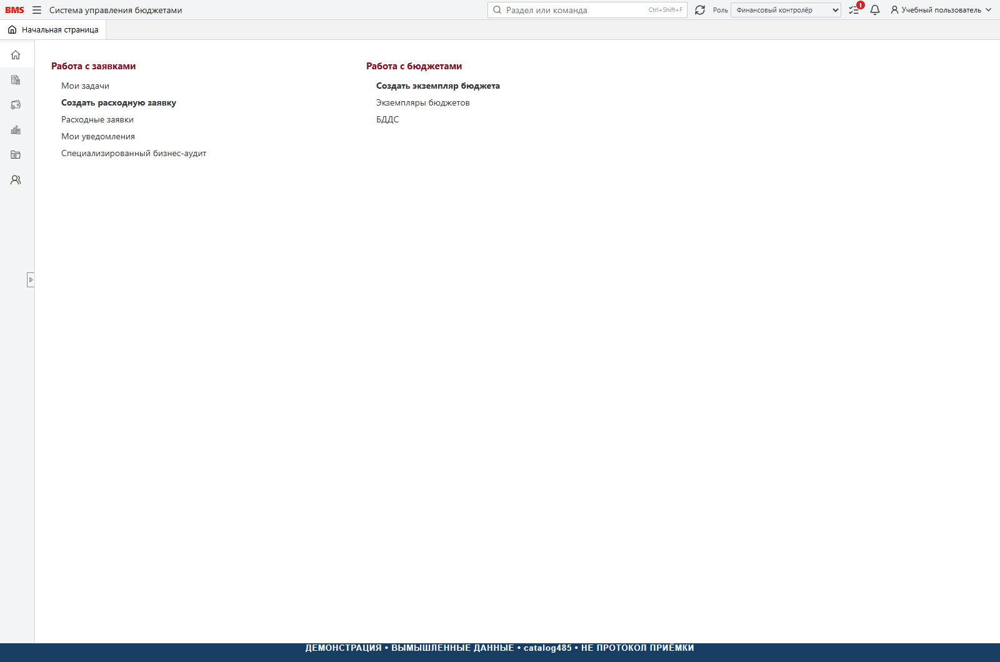
4. Правила работы с интерфейсом
Меню слева открывает функциональные разделы. Поле «Раздел или команда» ищет навигацию, а не строки всех документов. Горячая клавиша — Ctrl+Shift+F. Документы открываются во вкладках. Перед обновлением браузера, выходом, сменой роли или закрытием вкладки сохраните доступный черновик.
Роль выбирает режим уже выданных прав. Нельзя получить право согласовать, просто выбрав текст роли или открыв прямую ссылку. Сервер повторно проверяет сотрудника, роль, область доступа, состояние и версию документа.
F11 переключает полноэкранный режим, Ctrl+0 возвращает масштаб 100%. При широкой таблице используйте горизонтальную прокрутку. Не считайте скрытые колонки отсутствующими данными. Перед экспортом проверьте фильтры и количество строк; выгрузка не должна восприниматься как список только текущей страницы.
5. Ролевые маршруты чтения
| Роль | Основная последовательность |
|---|---|
| Инициатор ЦФО | Доступ → заявки → замещения и задачи |
| Владелец бюджета / руководитель подразделения | Бюджет → решения по заявкам → исполнение |
| Финансовый контролёр | Аналитики → проверка заявки → акрулы |
| Финансовый директор | Версии компании → дефицит и маршруты → отчёты |
| Генеральный директор | Утверждение бюджетов → согласование дефицита |
| Казначей | Очередь и оплата → календарь |
| Ответственный бухгалтер / главный бухгалтер | Первичка и закрытие → должники |
| Специалист НСИ | Новые контрагент и договор |
| Администратор | Установка → эксплуатация → приёмка |
Бухгалтер и ответственный бухгалтер — разные технические роли этого среза. Общий доступ на чтение не означает право закрытия. Технический администратор не получает автоматически полномочия финансового директора или бухгалтера.
6. Ежедневный контроль
Перед началом дня: открыть «Мои задачи», уведомления о возврате, очереди оплат и незакрытые оплаченные заявки. Проверить свежесть источников, если решение зависит от факта. В течение дня: сохранять черновики, обрабатывать решения с понятной причиной, не дублировать документы при сбое связи. В конце дня: проверить неподтверждённые операции, незавершённые загрузки вложений, новые оплаты и документы, требующие закрытия.
Ежемесячно: сверить действующую версию бюджета, план/факт, активные акрулы по календарным месяцам и перечень должников. Наличие месячного отчёта само по себе не вводит запрет проводок или процедуру закрытия периода: это отдельная возможность, не подтверждённая данным руководством.
7. Три обязательных различия
- Утверждённый экземпляр ≠ действующий бюджет компании. Для лимита важен состав действующей версии.
- Плановая дата / очередь ≠ подтверждённая оплата. Факт должен прийти через проверенный серверный механизм и быть сопоставлен с заявкой.
- Закрытие BMS ≠ создание бухгалтерского документа. Оно подтверждает управленческое закрытие и меняет остаток акрула, но не проводит документ в 1С.
8. Если поведение отличается
Остановите повторные действия, запишите номер документа, время, выбранную роль и текст ошибки. Не меняйте суммы для обхода проверки. Сравните с устранением проблем. Если различаются это руководство, встроенная короткая помощь и старое ТЗ, используйте реестр расхождений и проверку фактических прав на сервере. Изменение бизнес-правила требует отдельного решения, а не только правки текста инструкции.
Реализация: навигация, помощь интерфейса, сеанс и доступ.
1. Роли и доступ
Назначение ролей
Сотрудник BMS связан с реально аутентифицированной Windows-учётной записью. Роль и назначение ЦФО выдаются отдельно. Активная роль — одна из уже назначенных; она ограничивает текущие команды. Членство в группе AD само по себе не является универсальным назначением всех бизнес-ролей.
| Роль интерфейса | Код | Работа в процессе |
|---|---|---|
| Владелец бюджета | BUDGET_OWNER |
Планирует свой ЦФО, отвечает за заявки подразделения |
| Инициатор ЦФО | CFO_INITIATOR |
Готовит и подаёт документы в назначенных ЦФО |
| Финансовый контролёр | FIN_CONTROLLER |
Проверяет заявку, аналитики, лимит; участвует в согласовании |
| Финансовый директор | FIN_DIRECTOR |
Решения по бюджету, дефициту и версиям компании |
| Генеральный директор | GENERAL_DIRECTOR |
Окончательное утверждение бюджетов, соответствующий этап РЗ |
| Казначей | TREASURER |
Передача к оплате, очередь, даты и разрешённые казначейские действия |
| Бухгалтер | ACCOUNTANT |
Видимость финансовых данных; не равен ответственному за закрытие |
| Ответственный бухгалтер | RESPONSIBLE_ACCOUNTANT |
Частичное / полное закрытие и повторное открытие |
| Главный бухгалтер | CHIEF_ACCOUNTANT |
Закрытие и повторное открытие в доступной области |
| Специалист НСИ | NSI_SPECIALIST |
Подтверждение новых реквизитов после финансовых решений |
| Расчётчик зарплаты | PAYROLL_CALCULATOR |
Специальный маршрут зарплатного аванса |
| Аудитор | AUDITOR |
Роль присутствует в коде, хотя ранее обсуждалось её исключение |
| Системный администратор | SYSTEM_ADMIN |
Техническая настройка, а не замена бизнес-согласующих |
| Администратор интеграции | INTEGRATION_ADMIN |
Технический контур обмена, без общего бизнес-доступа |
Это перечень кодов, а не разрешение назначить их всем. Конкретные команды зависят от серверных политик, действующей роли, ЦФО/организации, статуса документа, этапа и независимости исполнителя.
Первичная настройка
- Администратор создаёт / проверяет сотрудника и его активность.
- Связывает его с подтверждённой Windows-учётной записью.
- Выдаёт минимально необходимые роли, не копируя набор другого человека.
- Настраивает назначения «ЦФО сотрудника» и владельца бюджета.
- Проверяет матрицу финансовых согласующих и срок действия.
- Сотрудник повторно входит, выбирает свою роль и проверяет видимость.
- Выполняются положительная и отрицательная проверки: свой документ виден, чужой недоступен; разрешённая команда работает, соседняя запрещена.
Владелец бюджета и руководитель подразделения трактуются как одна бизнес-функция. Однако связь с конкретным ЦФО всё равно должна быть настроена.
Видимость и право действия
Инициатор и владелец ограничены своей областью ЦФО. Общая финансовая роль может видеть больше, но чтение не разрешает автоматически редактирование, удаление, оплату, закрытие или согласование. После выдачи роли сервер также проверяет действующие назначения и область документа.
Право «создать» определяется сервером. Не ориентируйтесь только на видимость кнопки в демонстрационном снимке: для иллюстраций используется синтетический сеанс, а новая установка должна пройти отдельные проверки прав.
Смена роли
Сохраните черновик → дождитесь завершения записи → выберите роль в верхней панели → проверьте имя и разделы заново. Не меняйте роль во время операции с неизвестным результатом. Роль заместителя выбирается отдельно с указанием замещаемого сотрудника; см. замещения.
Независимость решений
Подача может удовлетворять собственный этап автора по специальному правилу версии маршрута. Это не означает, что автор может согласовать любой следующий этап. Из списка финансовых участников исключается автор; для требуемого этапа нужен независимый подходящий сотрудник. Если его нет, нужно исправить назначения, а не назначить фиктивное решение.
Расхождения, важные для внедрения
В этом срезе есть AUDITOR и техническая роль интеграции. Ответственный
бухгалтер выделен отдельно от ACCOUNTANT. Старое пожелание «закрывают также
ФК, ФД и администратор» в текущем сервисе закрытия не реализовано в таком виде.
Не расширяйте полномочия в инструкции без изменения и приёмки кода.
Реализация: подписи ролей, текущий сеанс, разрешение маршрута, полномочия закрытия.
2. Справочники и аналитики
Порядок подготовки
Сначала организации и подразделения, затем статьи затрат и статьи ДДС, связи статей с ЦФО, сотрудники и назначения, матрица согласования, валюты и курсы, контрагенты и договоры. Иначе пользователь может заполнить форму, но не пройти серверную проверку готовности.
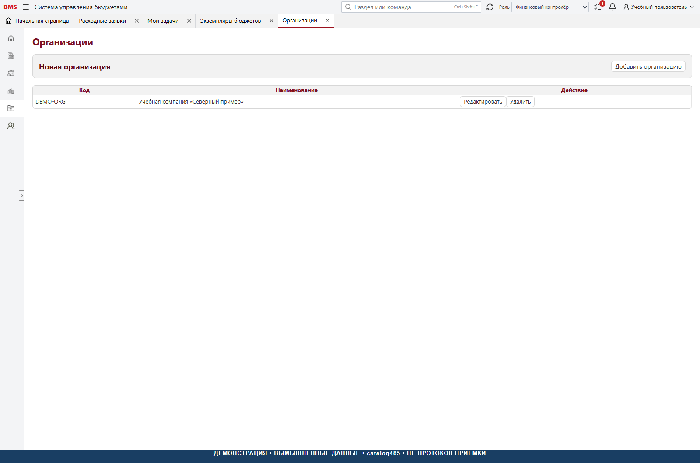
Организация
Организация в заявке определяет юридический контур и область договора. Сравнивайте наименование и код, а не похожие подписи. Выбирайте собственную организацию, от имени которой должен проходить платёж. Справочник пустой у новой установки: создавать записи старой компании или вымышленные UUID для обхода интеграции нельзя.
Подразделение, ЦФО и подразделение затрат
ЦФО отвечает за бюджет. Подразделение затрат показывает, куда отнести
управленческий расход. Они могут различаться по смыслу. Пользователь выбирает
подразделение затрат из доступного справочного представления, а не вводит
свободный текст. В коде есть отдельные публичные представления
cost-centers, accrual-cost-centers, cost-departments: их согласованность
и происхождение необходимо проверить при адаптации НСИ новой установки.
Это не основание создавать несвязанный второй набор подразделений вручную.
Статья ДДС
Статья ДДС определяет денежное направление, группу, вид деятельности, ЦФО и параметры участия в акрулах. Группа не должна подменять конечную статью строки. Используйте стабильный идентификатор; переименование должно менять подпись, а не создавать другую экономическую сущность.
Порядок настройки статьи:
- Открыть «Справочники → Статьи движения денежных средств».
- Найти по коду и названию; проверить, что редактируется не группа.
- Включить доступный режим редактирования.
- Указать группу, вид деятельности, направление и ЦФО.
- Если статья образует управленческий акрул, включить «Акрул» и выбрать отдельную статью затрат.
- Сохранить строку галочкой и дождаться подтверждения.
- Перечитать карточку и проверить использование статьи в нужном ЦФО.
Признак акрула без статьи затрат не является заполненной настройкой. Выключение признака очищает связь со статьёй затрат. Изменение текущей карточки не следует трактовать как автоматическое изменение всех ранее зафиксированных снимков заявок.
Статья затрат
Это отдельный справочник, не альтернативное название статьи ДДС. Одна показывает поток денег, другая — экономическую классификацию начисления. Справочник может показывать связанные статьи ДДС. Проверяйте правильность связи до подачи заявки, а не исправляйте её удалением используемых записей.
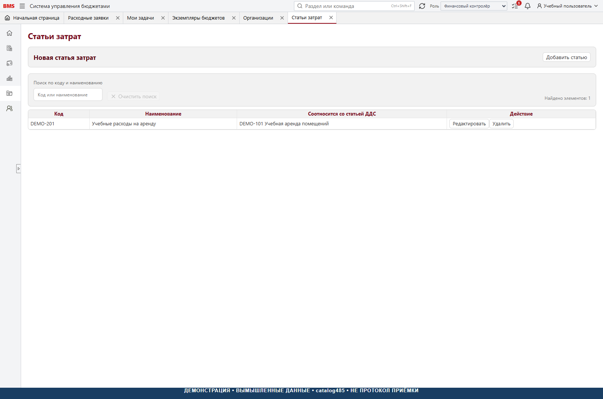
Контрагент и договор
Договор выбирается в контексте конкретных организации и контрагента. Если список пуст, сначала проверьте эти два поля. Нельзя использовать договор похожего поставщика для ускорения подачи. Для нового контрагента или договора предусмотрены отдельные признаки, поля и этап НСИ.
У нового контрагента различаются резидент РК и нерезидент. Заполняйте БИН/ИИН либо иностранные регистрационные реквизиты согласно выбранному варианту. Отсутствие документа или номера допускается только там, где форма предлагает явное исключение с пояснением. Это не универсальная возможность пропускать обязательные поля.
Валюты и курсы
Проверьте буквенный код, числовой код при необходимости, дату курса, курс и кратность. Наличие USD в справочнике не гарантирует наличие пригодного курса на дату заявки. Автозагрузка Национального банка в пакете выключена. Ручная подстановка случайного курса ради сохранения не допускается.
Что проверить после изменения
Поиск по коду и названию; фильтр ЦФО; раскрытие иерархии; следующую страницу; сохранение и повторное чтение; запрет изменения неуполномоченным лицом; доступность правильной статьи в новой заявке и бюджете. Перед удалением сначала проверьте использование. Удалять и создавать заново для обычного переименования не требуется.
Реализация: публичные справочники, настройки акрула у статьи, серверная валидация.
3. Бюджетирование
Три разных объекта
| Объект | Назначение | Чего сам по себе не делает |
|---|---|---|
| Экземпляр бюджета ЦФО | Статьи, календарные месяцы, направления, суммы | Не становится действующим лимитом до включения в нужную версию |
| Согласование экземпляра | Зафиксированные решения ФД и ГД | Не подменяет состав версии компании |
| Версия бюджета компании | Объединяет выбранные экземпляры | Не утверждает автоматически черновики |
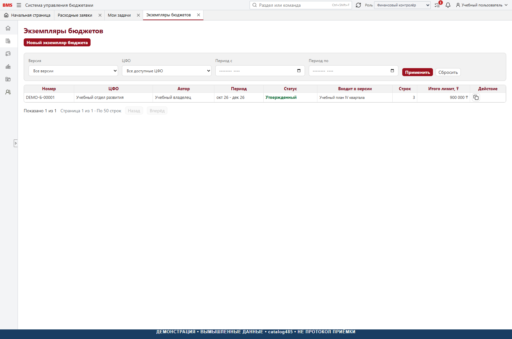
Создание экземпляра
Исполнитель: владелец / инициатор в своей области либо финансовая роль с соответствующим правом. Вход: настроенные ЦФО, статьи и нумерация.
- Открыть «Бюджетирование → Экземпляры бюджетов» и создать экземпляр либо использовать «Экземпляр бюджета» в группе «Создать».
- Проверить ЦФО, период начала и окончания. Месяцы строк должны входить в период заголовка.
- Добавить доступные статьи. Для каждой указать месяц, направление и сумму.
- При необходимости добавить понятный комментарий к строке.
- Сверить поступления, выплаты и чистый поток; не сводить расхождения искусственной балансировочной строкой.
- Сохранить черновик, перечитать его и проверить номер и строки.
При копировании существующего экземпляра создаётся новый документ, а не редактируется исходный. Перед сохранением копии перепроверьте все месяцы, аналитики и суммы: копия не является автоматически утверждённой версией.
Табличный вид
Табличный вид агрегирует строки по статьям и месяцам. Поступления положительные, выплаты отрицательные. В подробном виде направления и комментарии видны отдельно. Если в одной ячейке есть оба направления, ручное изменение чистой суммы может заменить их одной строкой. Это влияет на расходный лимит: перед подтверждением изучите предупреждение и проверьте подробный вид.
Не путайте знак отображения денежного потока с невалидной отрицательной суммой строки. Следуйте выбранному направлению и правилам формы.
Копирование факта в план
Выберите диапазон месяцев и статьи → выполните «Скопировать факт» → сверяйте результат → сохраните черновик. Это копирование уже загруженной серверной копии факта, а не запуск обмена с 1С. Выбранные ячейки заменяются, не увеличиваются на вторую такую же сумму. Подтверждённый нулевой факт обнуляет выбранную сумму; отсутствие загрузки не равно нулю и должно блокировать подмену. Остальные месяцы и статьи остаются неизменными.
В статической помощи остаются ссылки на 2026 год. Для другого года сначала проверьте фактическую поддержку API и источника; не предполагайте перенос годовых сумм автоматически.
Подача и решения
- Нажать «Подать на согласование». Интерфейс сохраняет текущий ввод и проверяет подтверждённую версию.
- Дождаться статуса согласования и проверить маршрут.
- Финансовый директор рассматривает документ; после него решение принимает генеральный директор независимо от суммы превышения.
- При возврате изучить комментарий, исправить черновик, сверить итоги и подать заново. Сохраняется история предыдущих решений.
- При отклонении не считать экземпляр утверждённым или действующим.
На этапе согласования строки заблокированы. Утверждённые лимиты не изменяют простым редактированием. Применяйте копию / новый экземпляр либо предусмотренную корректировку, а не изменение SQL вручную. Финансовый контролёр в коде имеет специальную возможность остановки возвратом / отклонением на этапе ФД; это не дополнительный обязательный этап обычного маршрута.
Действующая версия компании
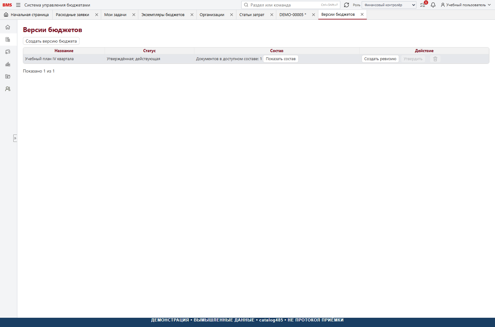
Откройте «Версии бюджетов». Проверьте название, состав, признаки публикации и активности. Включите нужные утверждённые экземпляры, изучите пересечения по ЦФО и месяцу, выполните разрешённую команду активации. Повторно откройте версию и проверьте, что именно она действующая.
Из двух экземпляров одного ЦФО на пересекающийся период нельзя делать вывод «лимиты всегда складываются». Интерфейс версии содержит информацию о пересечениях и выбранном эффективном экземпляре. Решение должно проверяться по фактическому составу и правилам эффективного бюджета.
После утверждения бюджета, созданного позже заявки, черновик заявки не обязательно пересоздавать: при подаче сервер заново читает лимит. Но уже зафиксированный маршрут поданной заявки сам не сокращается. Для обычного перезапуска используют возврат и повторную подачу, а не скрытое удаление этапов.
Корректировка и контроль
Для изменения утверждённого плана используйте «Корректировка экземпляра бюджета», если команда доступна вашей роли. Проверьте основание, исходный экземпляр, месяцы и статьи, итог изменения и маршрут. Наличие экрана не разрешает изменять утверждённый бюджет в обход команд приложения. После решения проверьте состав действующей версии и отчёт исполнения: согласованный документ и опубликованный лимит — разные контрольные точки.
Удаление через список предусмотрено для допустимых черновиков и роли с правом удаления; в короткой помощи это финансовый директор. Не удаляйте документы для сокрытия неудачного согласования.
Контроль результата
- Период заголовка включает все месяцы строк.
- Статьи соответствуют ЦФО и активны.
- Итоги проверены отдельно по направлениям, а не только по чистому потоку.
- Есть решения ФД и ГД; нет незавершённого возврата.
- Экземпляр включён в нужную действующую версию.
- Контроль заявки использует новый лимит, а не только изменившуюся подпись.
Реализация: форма и список, матричный ввод, согласование, оценка и маршрут, версии компании.
4. Расходные заявки
Цель и входные условия
Заявка фиксирует потребность в платеже, аналитику бюджета, основание, маршрут решений и последующий жизненный цикл. До начала нужны доступный ЦФО, организация, статьи, контрагент / вариант нового контрагента, основание, дата оплаты и при валютном платеже пригодный курс.
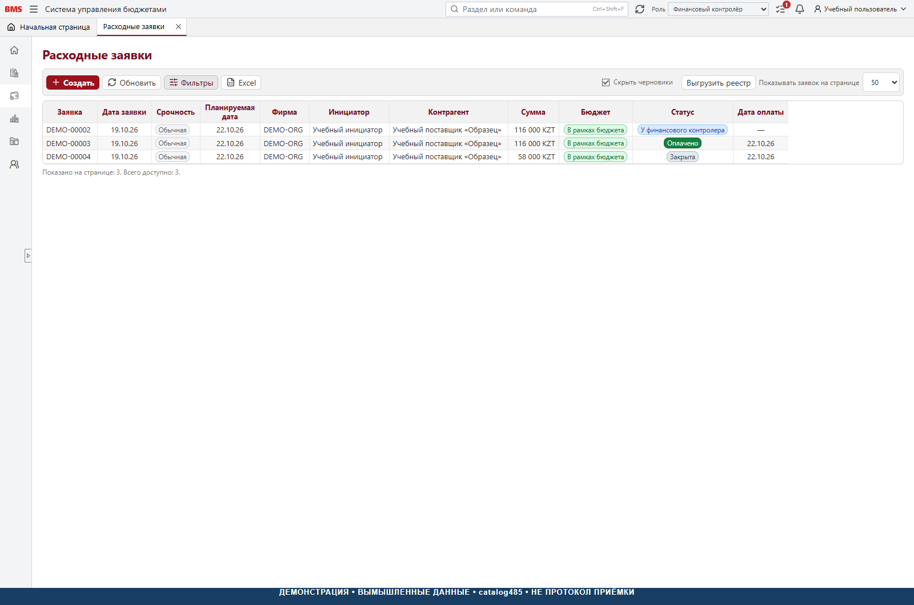
Поиск существующей заявки
Открыть «Казначейство → Расходные заявки». Проверить «Скрыть черновики»: черновик может существовать, но не показываться при включённом флажке. Раскрыть «Фильтры», проверить организацию, ЦФО, контрагента, инициатора, статус, дату и срочность. Не создавать вторую заявку только потому, что первая не видна под текущим отбором. При большом списке проверить пагинацию.
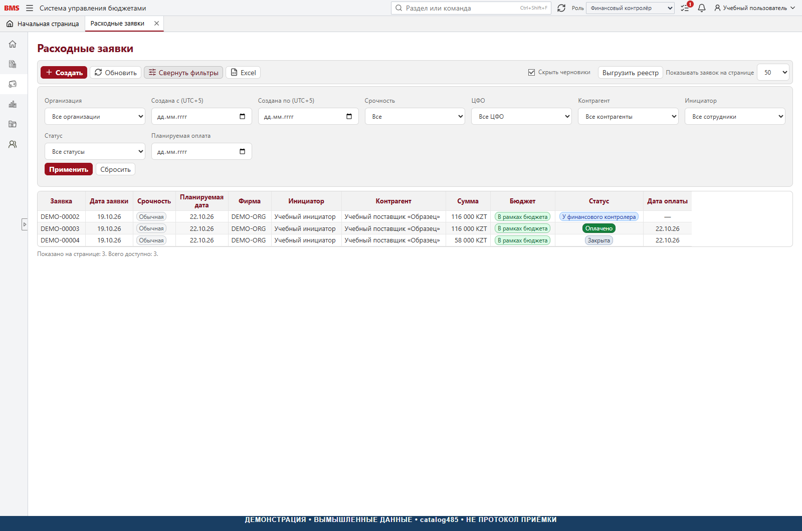
Шаг 1. Создать документ
Нажать «Создать» в списке или «Расходная заявка» в разделе «Создать». Номер определяется автоматически по настроенной нумерации ЦФО; ручная подстановка номера не заменяет сохранение. Номер может быть предварительно зарезервирован, а не означать, что документ уже записан на сервере.
Шаг 2. Заполнить «Основное»
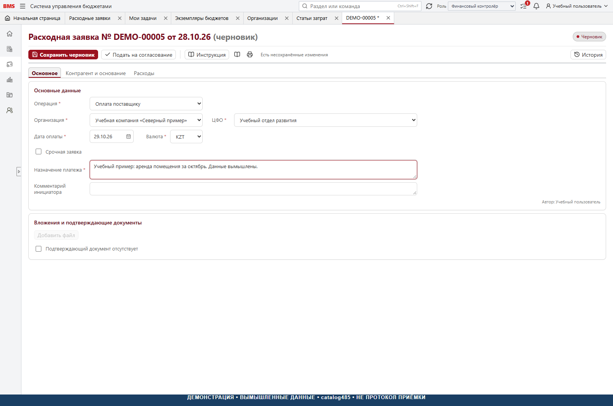
| Поле | Что проверить |
|---|---|
| Операция | Поставщик, налоги/социальные платежи, аванс, подотчёт или командировка — не взаимозаменяемые сценарии |
| Организация | Правильный юридический контур и доступ |
| ЦФО | Бюджетная ответственность, а не произвольное подразделение |
| Дата оплаты | Плановый день; определяет бюджетный месяц и казначейскую очередь |
| Валюта | Валюта обязательства; суммы тенгового контроля проверяются отдельно |
| Срочность | При включении заполнить обоснование; не означает автоматическое согласование |
| Назначение платежа | Понятное описание деловой цели и периода |
| Комментарий | Дополнительный контекст, не подмена основания и суммы |
| Вложения | Подтверждающие материалы или разрешённый вариант отсутствия с пояснением |
Не записывайте пароли, платёжные ключи и лишние персональные данные в комментарии. Смена операции может очистить несовместимые поля: прочитайте подтверждение, сначала сохраните нужный текст отдельно в разрешённом месте.
Шаг 3. Контрагент и основание
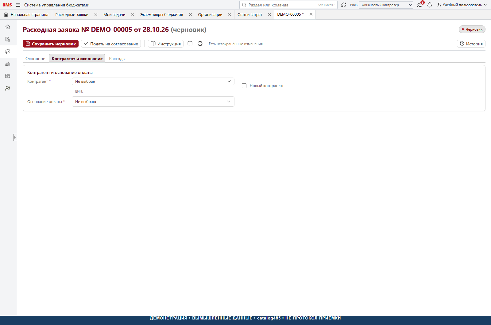
Существующий контрагент: выбрать его из справочника, затем допустимый договор в контексте организации. Новый: включить признак, заполнить имя и регистрационные данные, резидентность и требуемые пояснения.
Варианты основания в контракте:
Contract— договор; выбрать существующий либо заполнить новый.InvoiceWithoutContract— счёт без договора; заполнить номер и дату счёта.PublicOffer— публичная оферта; указать наименование и идентификатор.OtherBasis— другое основание; дать содержательное объяснение.
У нового договора заполнить номер / разрешённый признак его отсутствия, дату, предмет и условия. Документ нового договора — отдельный вид вложения. Отсутствие вложения или номера объясняется через предусмотренные поля, а не произвольным пробелом. Возможность исключения проверяется на сервере.
Шаг 4. Строки «Расходы»
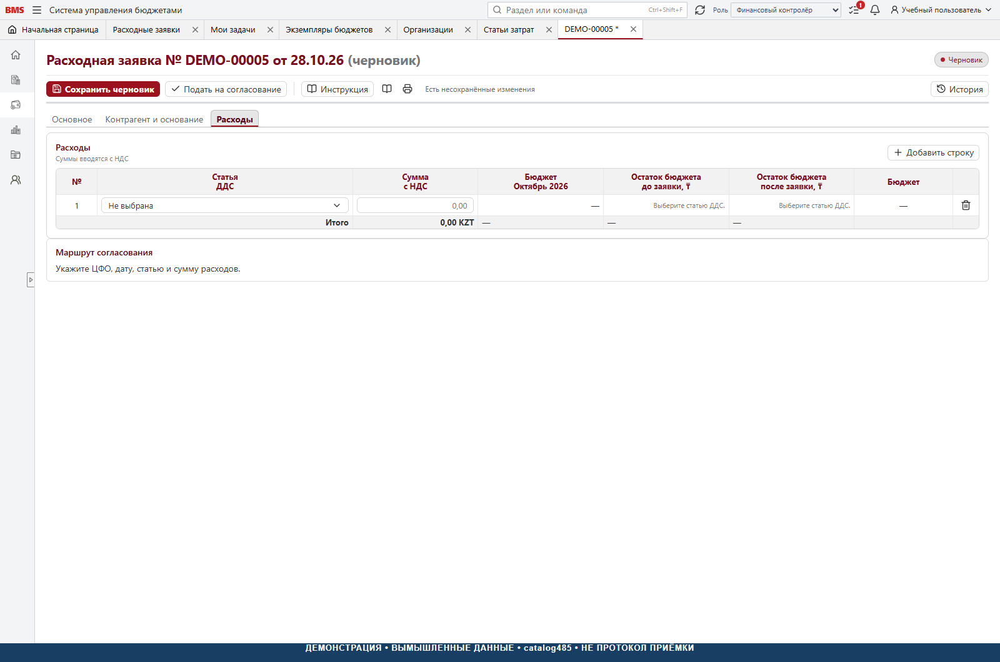
Добавить строки; выбрать статью ДДС, сумму и доступные аналитики. Для статьи с акрулом проверить подразделение затрат, период начисления, статью затрат из настройки и НДС. Период начисления — календарный месяц, который не обязан совпадать с датой оплаты. Для нескольких месяцев или подразделений нужны отдельные строки / распределения предусмотренного интерфейса, а не описание разбиения только в комментарии.
В коде ставок представлены Vat16 и WithoutVat. Это поддержанные варианты
формы данного среза, не утверждение о применимости ставки к каждой сделке.
Выбор проверяет ответственный специалист своей организации.
Учебный расчёт: сумма с НДС 116 000 ₸, НДС 16,0% — 16 000 ₸, сумма без НДС — 100 000 ₸. Для «Без НДС» вся сумма строки является суммой без выделенного НДС. Не нужно второй раз прибавлять НДС к уже полной сумме. Хранимые расчёты проверяются с точностью копеек, даже если таблица показывает целые.
Шаг 5. Бюджетный контроль
Контроль группируется по бюджетным ключам; отображение строки и совокупный результат могут различаться. Для каждой позиции применяется смысловая формула:
Резерв после подачи = текущий резерв − собственная прежняя проекция + новая проекция
Доступно после подачи = лимит − резерв после подачи − подтверждённый расход
Положительный дефицит = сумма max(0, −доступно) по всем позициям
Положительный остаток одной позиции не гасит дефицит другой. Поступления не увеличивают расходный лимит автоматически. Пример: позиция А даёт −30 000, позиция Б +50 000. Дефицит маршрута — 30 000, а не ноль и не −20 000.
Собственный резерв не должен вычитаться дважды. Повтор той же команды не должен создавать второе движение. При изменении возвращённой заявки сервер пересчитывает требуемую проекцию с учётом уже существующей, а не прибавляет всю сумму заново. Если снимок / лимит недоступен или противоречив, готовность блокируется: неизвестный лимит не является нулём или разрешением превысить его.
Шаг 6. Сохранить и подать
«Сохранить черновик» сохраняет ввод без запуска согласования. «Подать на согласование» сохраняет необходимые изменения, перечитывает подтверждённое состояние и выполняет проверку готовности. Следите за результатом команды. Не закрывайте окно во время неизвестного результата и не создавайте копию для обхода сетевого сбоя. Используйте повтор той же попытки, когда он предложен.
После подачи содержательное редактирование ограничено. Для исправления используют возврат; отдельные изменения аналитик согласования разрешены только специальным серверным контрактом и не означают свободное изменение суммы.
Как строится маршрут
Для обычного автора, который не удовлетворил свой этап специальным правилом:
| Положительный дефицит | Финансовая цепочка |
|---|---|
| 0 ₸ | Финансовый контролёр |
| Больше 0 и до 100 000 ₸ включительно | ФК → ФД |
| Свыше 100 000 ₸ | ФК → ФД → ГД |
Перед этой цепочкой добавляется независимый владелец ЦФО, если автор не является владельцем соответствующего ЦФО. Подача владельца удовлетворяет его собственный этап. Граница «свыше» принципиальна: 100 000 не равно 100 001.
Исключения catalog485: для прямой подачи ФД его собственный этап ФД не добавляется; аналогично для ГД и его этапа. Для автора-ФК предусмотрены версии, где подача удовлетворяет его собственный этап ФК. Независимый владелец и остальные требуемые финансовые этапы сохраняются согласно конкретной версии. Не описывайте это как разрешение самосогласования: участники и исключения проверяются отдельно, а отсутствие независимого исполнителя блокирует маршрут. Для аванса зарплаты предусмотрен отдельный маршрут; общая таблица к нему не применяется без проверки.
Точный маршрут хранится снимком с номером и версией определения. Действующим считается снимок конкретной заявки, не только сегодняшние назначения в матрице. Изменение матрицы не должно переписывать уже принятые решения задним числом.
Решение согласующего
Открыть «Мои задачи» под нужной ролью → открыть документ → прочитать строки, лимит, маршрут, вложения и историю → выполнить доступное решение.
- Согласовать: принять текущий этап; это не всегда окончательное утверждение.
- Вернуть: указать причину, отправить на исправление. Резерв сохраняется; при новой подаче запускается новый снимок маршрута с начала.
- Отклонить: завершить согласование отказом; резерв освобождается.
- Отменить: доступно только в разрешённых состоянии и роли, до фактической оплаты. После оплаты закрытие и бухгалтерская корректировка не подменяются отменой.
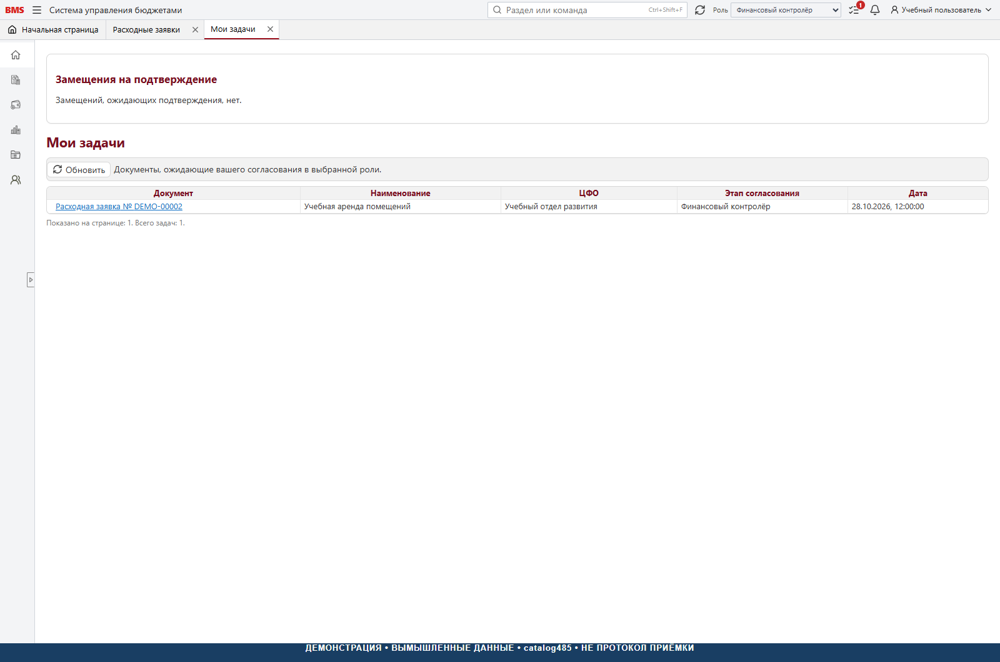
Причина должна отвечать на вопрос, что именно исправить или почему отказано. «Не так» недостаточно для нормальной работы, хотя длина текста сама по себе не гарантирует деловой смысл. Проверяйте сохранённый результат в истории.
НСИ и передача казначею
Если финансовая цепочка закончена, но нужны новые контрагент или договор, заявка попадает в «Ожидает НСИ». Специалист НСИ проверяет и связывает реквизиты через доступную команду. Это не даёт права обойти финансовые этапы. После выполнения условий заявка утверждена; в текущем маршруте казначей отдельно выполняет передачу «К оплате». Финансовое согласование не означает автоматическую отправку в банк.
Вложения
Максимум одного файла — 25 × 1 024 × 1 024 = 26 214 400 байт. Пустой файл, недопустимое имя и исполняемые расширения отклоняются. Базовый запрет включает exe, com, bat, cmd, msi, ps1, vbs, js, jse, wsf, wsh, scr, pif, cpl, hta. Дополнительно действуют хранение, сканер и проверка полномочий: допустимое расширение не делает файл автоматически безопасным.
Подтверждающий документ, новый договор и дополнительный документ различаются. Дополнительные материалы к поданной заявке требуют комментария и не являются свободно удаляемой заменой истории. При копировании РЗ вложения нужно добавить заново. Загрузка в черновик использует временную upload-сессию; сбой загрузки нельзя трактовать как успешно прикреплённый документ.
Состояния, которые пользователь должен различать
| Код | Подпись | Деловой смысл |
|---|---|---|
| DRAFT | Черновик | Подготовка, ещё не подан |
| RETURNED | Возвращена | Исправление и новая подача |
| IN_APPROVAL | На согласовании | Есть текущий этап снимка |
| APPROVED | Утверждено | Финансовые условия выполнены; не факт оплаты |
| AWAITING_NSI | Ожидает НСИ | Требуется завершить реквизиты |
| TO_PAY | К оплате | Казначейская очередь |
| PARTIALLY_PAID | Оплачена частично | Есть не весь подтверждённый платёж |
| PAID | Оплачена | Есть полное подтверждение; может требовать первичку |
| CLOSED | Закрыта | Управленческое закрытие оформлено |
| REJECTED | Отклонена | Отрицательный исход согласования |
| CANCELLED | Отменена | Разрешённая отмена до оплаты |
Реализация: форма, поля и типы, контроль дефицита, планирование этапов, исключения автора, проверка участников, статусы, ограничения файлов.
5. Казначейство и оплата
Очередь к оплате
Казначей выбирает свою активную роль, открывает утверждённую заявку, проверяет дату, организацию, валюту, контрагента, основание и наличие необходимых решений. Только разрешённая команда переводит документ в «К оплате». Затем заявка проверяется в списке очереди / календаре.
Срочность — признак заявки, а не автоматический ранг платёжного поручения. «Приоритеты оплаты» отбирают текущую очередь по дате, организации, ЦФО и срочности; автоматические баллы и произвольная перестановка не реализованы этим экраном. Нельзя обещать оплату только по факту попадания в список.
Перенос даты
Используйте доступную казначейскую панель даты в карточке. Проверьте
старую и новую даты, изменение бюджетного месяца и результат проверки.
При включённом контроле источника перенос в другой месяц может быть
заблокирован настройкой ReschedulingEnabled. Не меняйте дату напрямую
в БД, не отключайте контроль для устранения такого сообщения.
После допустимого переноса заново проверьте бюджетный ключ, очередь, маршрут и историю. Перенос через границу месяца не эквивалентен изменению только визуальной даты: он может затрагивать лимит и резерв.
Что считается оплатой
Оплату подтверждает проверенный серверный источник и его сопоставление с заявкой. Нажатие «к оплате», установка плановой даты, добавление скана платёжки или ввод номера документа в локальную форму не создают финансовый факт. Для новой установки нужно разработать штатный адаптер и публикацию собственной витрины BMS, затем принять сверку оплат. Готового нового адаптера нет; фоновые функции выключены. См. статус обмена.
Проверьте:
- Факт загружен полным согласованным поколением.
- Источник, организация, контрагент, валюта и связь с заявкой определены.
- Платёж не применён дважды; сторно связано с исходным событием.
- Частичная сумма дала частичную оплату, а не преждевременное закрытие.
- Полная оплата дала подтверждённую дату и правильное состояние.
- Остаток резерва и отчёты не учитывают один расход дважды.
В репозитории есть общий ConfirmedPaymentApplicationOrchestrator, который
помечен как не подключённый самостоятельный путь. Его наличие не означает
наличие универсального публичного API для ручной проводки платежа.
Читатели уже опубликованных оплат сохранены в инфраструктурных сервисах.
Это не загрузчик из 1С; без нового контура получения и публикации факта
полный цикл автоматической оплаты на новой установке не готов.
Просмотр платежей
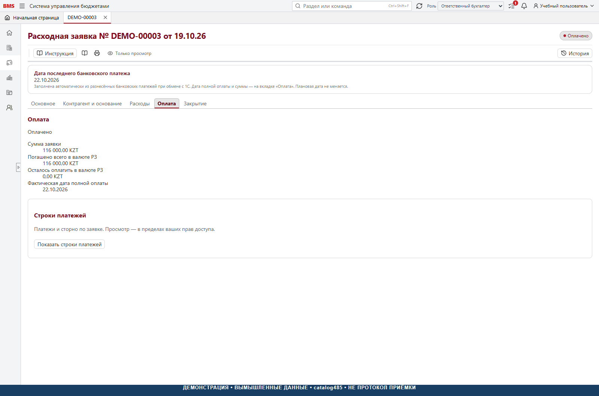
«Безналичные платежи» читает платежи выбранной заявки с серверной проверкой прав. Это не глобальная банковская выписка. В карточке различайте сумму обязательства, подтверждённую оплату, остаток, валюту и тенговый эквивалент. При неизвестной сумме в тенге используйте признак неполноты, не ноль.
Переплата, дефицит переплаты и ручные корректировки — отдельные объекты с собственными основаниями и разрешениями. Не списывайте разницу произвольной балансировочной строкой и не меняйте исходный платёж для визуального сведения.
Что не является проведением
Формы подготовки «Сверки взаиморасчётов», «Взаимозачёты задолженности», «Списания задолженностей», «Поступление безналичных ДС» и «Списание безналичных ДС» в catalog485 не подключены к полноценным серверным командам соответствующих операций. Их локальный ввод не меняет банк, взаиморасчёты, статус, резерв или факт. Не использовать их как подтверждение юридической или бухгалтерской операции.
Если оплату нужно исправить
После подтверждённой оплаты нельзя отменять заявку как неоплаченную. Ошибочный источник исправляется проверенным механизмом исходной системы и согласованной обработкой сторно / повторной загрузки. Изменение аналитики в заявке не означает изменение фактической выписки. Закрытие первички оформляется отдельно ответственным бухгалтером.
При расхождении зафиксируйте сумму, валюту, заявку, источник, дату и поколение обмена; остановите повторную публикацию до выяснения причины.
Реализация: границы экранов, казначейская дата, настройки оплат, фоновая сверка, граница общего оркестратора.
6. Акрулы, первичка и закрытие
Экономический смысл и граница
Акрул BMS — временная управленческая запись, связанная с оплаченной заявкой и ещё не закрытой первичкой. Это не бухгалтерская проводка и не автоматическая запись в 1С. Для товара, постоплаты с существующим начислением и других нерасходных платежей не нужно механически включать акрул: решение зависит от настроенной статьи и бизнес-содержания.
Изменение относительно раннего обсуждения: catalog485 использует признак «Акрул» и статью затрат у статьи ДДС, снимки строк и аналитики согласования. Нельзя документировать старое требование об отдельной универсальной вкладке «Accruals» и чекбоксе ФК как точное описание этой формы. В заявке соответствующие поля находятся в строках «Расходы» и разрешённых настройках аналитики. Это отмечено также в реестре расхождений.
Подготовка аналитики
ФК проверяет статью затрат, подразделение затрат, календарный месяц, сумму и НДС. Для нескольких периодов / подразделений / статей нужны отдельные строки или поддержанное распределение. Период в данных представлен первым числом месяца, но означает весь календарный месяц. Подразделение затрат может отличаться от бюджетного ЦФО.
Не меняйте общий справочник ради разовой переклассификации оплаченной заявки без оценки влияния. Где доступен редактор аналитики, используйте его с причиной и проверкой результата. Возможность редактирования определяется сервером; обычный «карандаш» не даёт права менять сумму, историю или подтверждённый платёж.
Возникновение и остаток акрула
После полного подтверждения оплаты создаётся / фиксируется цикл начисления по подходящим строкам. Исторические суммы и KZT берутся из снимка, а не пересчитываются произвольно по сегодняшнему курсу. Проверить запись можно в «Управленческий учёт → Активные управленческие начисления».
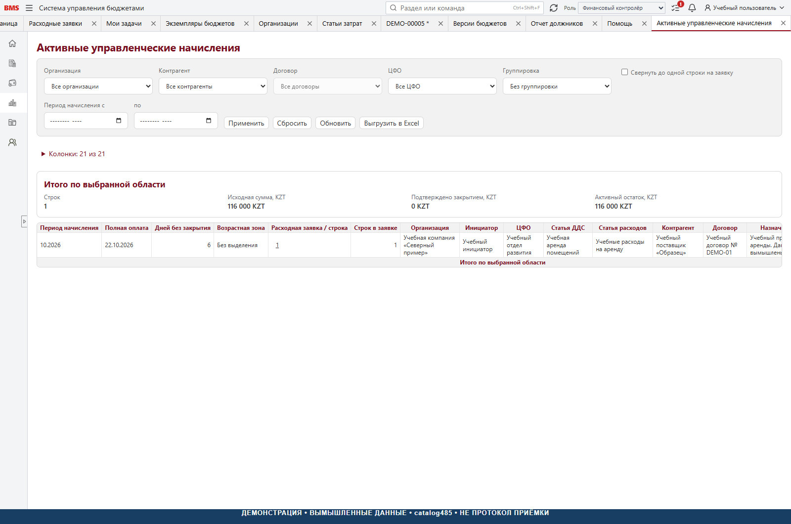
Проверка каждой строки:
Первоначально = подтверждено закрыто + осталось
Первоначально KZT = подтверждено закрыто KZT + осталось KZT
История не удаляется при закрытии. Активный остаток уменьшается; при полном закрытии он больше не должен выглядеть активным начислением. Выражение «удалить акрул» в бытовом обсуждении не означает физическое удаление аудита или всех прежних записей SQL.
Кто закрывает
В catalog485 команды закрытия и повторного открытия требуют роли
RESPONSIBLE_ACCOUNTANT или CHIEF_ACCOUNTANT, активного сотрудника
и разрешённой организации. ACCOUNTANT, ФК, ФД и системный администратор
не получают это право автоматически. Если по правилам внедрения закрывать
должны другие роли, это отдельное изменение продукта с приёмкой.
Полное закрытие
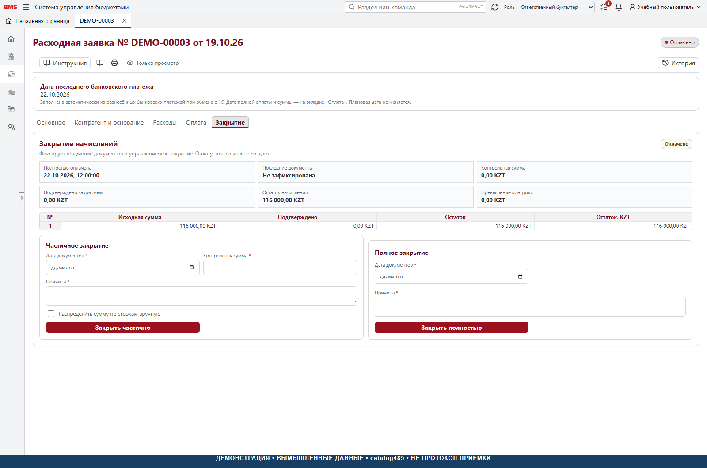
Условие: заявка полностью оплачена и находится в PAID, подтверждение
оплаты доступно. Результат: CLOSED, заполнена дата предоставления
документов, закрыт остаток начисления, сохранён аудит.
- Открыть заявку в бухгалтерской роли.
- Сверить организацию, контрагента, сумму, валюту и факт полной оплаты.
- Проверить фактически предоставленные закрывающие документы.
- На вкладке «Закрытие» указать дату предоставления документов.
- Указать причину / пояснение, требуемое командой.
- Выполнить полное закрытие и дождаться подтверждения.
- Перечитать карточку, историю и отчёт активных начислений.
Дата предоставления документов — отдельное деловое поле, не дата клика, не дата оплаты и не бухгалтерский период. Не заменяйте её вымышленной датой ради закрытия. Сохраняется также техническое время операции.
Частичное закрытие
Этот срез поддерживает частичное закрытие, хотя раннее пожелание было «не усложнять, только кнопка». Вводится контрольная сумма документов; сервис распределяет её по текущим остаткам подходящих строк пропорционально. Есть возможность точного ручного распределения через контракт, если соответствующий интерфейс доступен.
Правила распределения:
- Распределяется не больше текущего активного остатка.
- Суммы округляются до двух знаков; остаток округления относится на последнюю положительную строку по установленному порядку.
- Ручное распределение должно потреблять точную распределяемую сумму, не превышать остатки и не дублировать строки.
- KZT следует исходному снимку, не текущему валютному курсу.
- Излишек контрольной суммы фиксируется как контрольный факт, а не создаёт новый расход или отрицательный остаток.
Пример: активные остатки двух строк — 60 000 и 40 000 ₸; документы на
25 000 ₸ распределяются как 15 000 и 10 000 ₸. Остатки — 45 000 и 30 000 ₸.
Итого 100 000 = 25 000 + 75 000. Этот пример отдельный от скриншотного
сценария 116 000 ₸. Если частичное закрытие потребило весь акрул, не
предполагайте без проверки, что статус автоматически стал CLOSED:
полное закрытие — отдельная команда.
Повторное открытие
При ошибочном полном закрытии уполномоченный бухгалтер открывает
CLOSED-заявку и выполняет «Открыть повторно» с причиной. Сервис
проверяет прежнее полное подтверждение оплаты, создаёт новый цикл
при наличии подходящих строк и сбрасывает текущий результат закрытия
по доменным правилам. Старые действия не стираются.
После команды нужно проверить статус, дату документов, новый остаток, цикл и отчёт. Повторное открытие не означает второй платёж и не запускает согласование исходной потребности с нуля. Повтор той же команды не должен создавать ещё один цикл.
Контроль ошибок
Если полная оплата не доказана, источник недоступен, версия устарела
или строки противоречат снимку, команда должна остановиться. Нельзя
закрывать через ручную смену status в SQL. При неизвестном результате
повторить прежнюю попытку, проверить историю и только затем принимать
следующее решение.
Реализация: права закрытия, команды и транзакция, распределение, редактор аналитик, настройка статьи, панель закрытия.
7. Отчёты и контроль показателей
Общий порядок
Выбрать роль и область → установить период и фильтры → обновить → проверить свежесть / полноту → сверить итог с источником → открыть детализацию → при необходимости выгрузить. Записать фильтры вместе с выгрузкой, иначе сравнение двух разных отборов может выглядеть ошибкой суммы.
Ноль означает подтверждённое числовое значение. Пусто / «—» может означать недоступный факт или нерассчитываемую величину. Не заменяйте отсутствующий месяц нулями. Итог из точных сумм может отличаться от суммы округлённых ячеек.
БДДС
Открыть «Бюджетирование → Отчёты → БДДС», выбрать доступный ЦФО и период. При доступности включить факт. Для анализа различать направление: поступления положительные, выплаты отрицательные.
Отклонение = факт − план
Процент = отклонение / |план| × 100%
При плане 0 процент не определён: «—».
Для выплаты −100 000 по плану и −120 000 по факту отклонение −20 000, то есть −20,0%. Экономия расхода даёт положительное отклонение. Итоговый процент вычисляется по итогам, не как среднее процентов строк. Перед сравнением проверить наличие всех месяцев факта и принадлежность статей к ЦФО. Свёртка дерева меняет видимость строк, не экономический итог.
Короткая встроенная помощь содержит исторические формулировки о 2026 годе и источнике факта. Не используйте их как единственный контракт обмена для новой установки; проверяйте API, реплику и интеграционное руководство.
Исполнение бюджета
Сравнивать лимит, резерв, оплаченные суммы и доступность по тем же ключам: ЦФО, статья, месяц и необходимые измерения. Утверждённый экземпляр вне действующей версии не должен восприниматься как дополнительный лимит. Проверять собственную проекцию заявки и исключение двойного учёта оплат. Если расход уже присутствует в бухгалтерском факте, нельзя добавлять его второй раз только потому, что есть оплаченная заявка.
«Незабюджетированные статьи по ЦФО» используется для поиска факта / статей, не покрытых планом в соответствующей области. Это диагностический отчёт, а не автоматическое создание лимитов.
Платёжные календари
Различаются платёжный календарь, календарь по датам и товарный календарь. Фильтры, дата отсечения и состав данных должны быть зафиксированы до сверки. Календарный план не является выпиской банка. Не подтверждайте оплату только по наличию суммы на дне календаря.
Активные управленческие начисления
Выбрать организацию, ЦФО / подразделение, контрагента / договор, месяцы начисления, детализацию по строкам или заявкам, при необходимости группировку. Проверять первоначально, закрыто, остаток в валюте и KZT. При детализации заявки несколько строк могут сворачиваться — не складывать одновременно итог заявки и её детализацию как независимые записи.
Возраст — календарные дни от бизнес-даты полной оплаты до даты расчёта. Текущая конфигурация содержит цветовые пороги 8 / 15 / 31 день. Это настройки визуализации данного среза, а не утверждённый норматив предоставления первички. Раннее решение «пока только количество дней» отличается от наличия цветовых зон в коде; норматив требует отдельного утверждения.
Отчёт должников
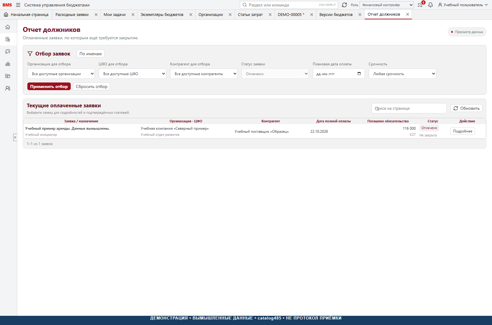
Пункт «Отчет должников» показывает текущие заявки PAID, которым
нужно закрытие. Это не полноценный исторический отчёт «на произвольную
прошлую дату»: граница прямо указана в описании экрана.
В API также есть агрегирование по именам инициаторов. Известная сумма KZT
и количество неизвестных сумм хранятся отдельно; если часть оценок неизвестна,
общая сумма не должна становиться достоверным нулём.
По каждой найденной позиции: проверить автора, организацию, дату оплаты, возраст, остаток закрытия → запросить первичку по внутреннему процессу → бухгалтер подтверждает документы и закрывает → перечитать отчёт. Должник в этом контексте — ответственный за документы, не юридическое заключение о денежном долге человека компании.
ОПиУ
В этом срезе основание API — currentUnclosedAccrualsExcludingVat:
текущие незакрытые акрулы без НДС по месяцам и подразделениям / статьям.
Это не полный отчёт о прибыли и убытках с выручкой, всеми расходами,
себестоимостью и бухгалтерским закрытием. Не выдавайте его за регламентированную
или полную управленческую прибыль компании. Проверяйте детализацию до заявки.
Журналы и аудит
История заявки отвечает, что произошло с конкретным документом. «Журнал изменений» и специализированный бизнес-аудит показывают зарегистрированные события в доступной области. Журнал обмена нужен для источников и публикаций. Монитор сеансов показывает техническую активность, но не является табелем или доказательством согласования документа.
Протокол сверки отчёта
Зафиксировать: название / версия, дата формирования, роль, область, период, фильтры, источник / поколение, точная исходная сумма, итог BMS, разница, причина. При расхождении показывать реальную величину; не добавлять балансировочную статью. Для округлений отдельно сравнить точные суммы и видимое целочисленное представление.
Реализация: БДДС, граница должников, агрегирование по инициатору, активные акрулы, основание ОПиУ, цветовые настройки.
8. Замещения, задачи и уведомления
Замещение сотрудника
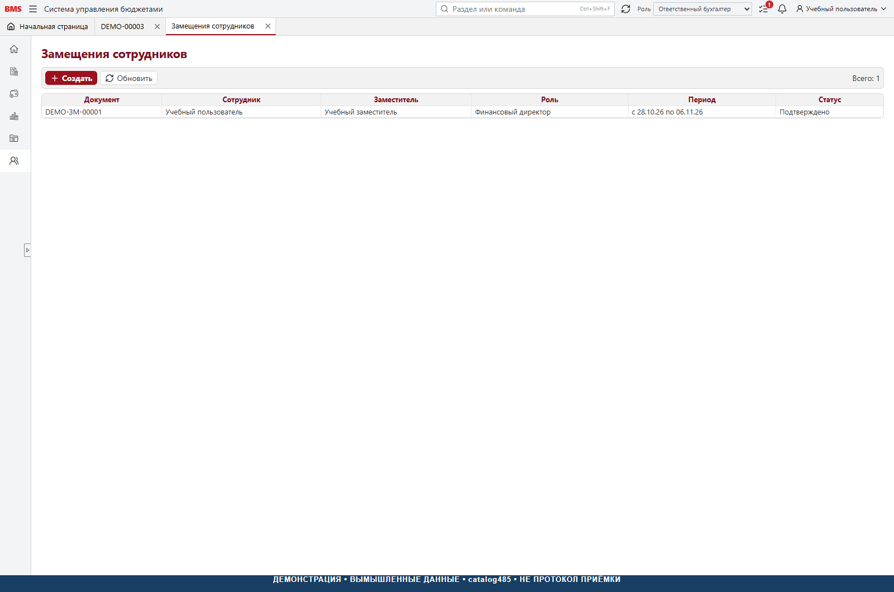
Кадровый документ задаёт основного сотрудника, заместителя, передаваемую бизнес-роль, дату начала и при наличии дату окончания. Заместитель и основной сотрудник должны различаться. Подтверждённое замещение не подменяет пользователя Windows: действие остаётся действием фактического исполнителя с указанием, кого он замещает.
Порядок: открыть доступный раздел «Кадры → Замещения сотрудников» → создать документ → выбрать сотрудника и роль → заполнить срок → сохранить черновик → направить на подтверждение → заместитель подтверждает или отказывает → после вступления в силу выбирает соответствующую роль замещения в верхней панели. Возврат к своей роли выполняется явно.
| Код | Смысл |
|---|---|
| DRAFT | Подготовка, полномочия ещё не действуют |
| PENDING | Ожидает подтверждения |
| CONFIRMED | Подтверждено; дополнительно проверяется срок и полномочия |
| REJECTED | Заместитель отказал |
| REVOKED | Замещение отозвано |
| EXPIRED | Срок завершён |
Отсутствие даты окончания не означает невозможность отзыва. Право должно быть действительно на момент действия. После окончания / отзыва новая команда по замещению не должна проходить. Старый аудит сохраняется. Проверять нужно и основного, и фактического исполнителя, а не только подпись роли.
«Мои задачи»
Задачи показывают документы, ожидающие решения выбранной роли на текущем этапе: заявки, бюджеты, корректировки. Откройте документ, изучите фактический маршрут и выполните разрешённую команду. Счётчик задачи — не количество всех документов компании. При смене роли состав задач может измениться.
Повторная подача возвращённого документа создаёт новую попытку маршрута, а не разрешает нажать старое решение. Повтор одного сетевого запроса должен быть идемпотентным, не создавать вторую задачу или два уведомления.
Уведомления
Различать:
- задачи на решение;
- уведомления о возврате заявок;
- уведомления о бюджетных корректировках;
- сообщения / контроль по незакрытой первичке;
- email-очередь и недельную рассылку.
Уведомление не является новым правом доступа. Прямая ссылка из письма снова проходит Windows-вход, роль и область. Если письмо есть, а кнопки решения нет, сначала проверьте актуальный статус и назначение, а не пытайтесь повторно согласовать по старой ссылке.
Почта
В исходном пакете захват задач в почтовый контур выключен. Реальная отправка требует SMTP, разрешённого домена, защищённых локальных настроек, ACL, TLS, расписания и приёмки получателей. Наличие записи в очереди, успех SMTP и фактическое прочтение письма — три разные вещи.
Недельный контроллер первички поставляется исходниками отдельно. Он должен быть адаптирован к новой инфраструктуре и не запускается вместе с установщиком автоматически. При неизвестном результате SMTP нельзя слепо пересылать всю пачку повторно: сначала проверить журнал отправок, идемпотентность и неопределённые доставки.
SLA и периодические заявки
Раннее ТЗ включало производственный календарь, SLA, напоминание за четыре рабочих часа и периодические шаблоны. Этот комплект документации не нашёл достаточного подтверждения полного пользовательского и серверного пути этих функций в catalog485. Не считать их готовыми только по наличию старого плана. Срочная заявка не должна автоматически согласовываться; рабочие нормативы нужно утвердить и проверить отдельно.
Реализация: контракт замещений, задачи, уведомления возврата, уведомления корректировок, почтовый worker, недельный адаптер.
Реализация и ограничения BMS 1.0
Это описание зафиксированного кода, не утверждение, что новая установка уже прошла бизнес-приёмку. Предыдущие локальные проверки перечислены в VALIDATION; новые документальные иллюстрации — в SCREENSHOTS.
Реестр возможностей
| Область | Что присутствует | Ограничение / необходимая проверка |
|---|---|---|
| Вход | Windows/AD, SID, отдельные роли BMS, активная роль | Требуется собственный домен / Windows-контур и назначения |
| Бюджеты | Экземпляры, строки по месяцам, матрица, копирование факта, решения | Факт должен быть загружен; старые подсказки привязаны к 2026 |
| Версии компании | Состав, публикация, активная версия, пересечения | Утверждение экземпляра не равно включению в лимит |
| Корректировки | Отдельный интерфейс и серверные контракты | Проверить права и эффект в действующей версии |
| Расходные заявки | Черновик, подача, маршрут, возврат, отказ, НСИ, казначейство | Маршрут зависит от роли автора и версии снимка |
| Резерв | Проекции, контроль положительного дефицита, идемпотентность | Конкурентный сценарий новой установки ещё требует приёмки |
| Оплата | Читатели собственной витрины и профиль серверной сверки | Выключено; штатный адаптер 1С и новый издатель витрины требуют реализации |
| Акрулы | Признак у статьи, аналитика строк, снимки, активный остаток | Не бухгалтерские проводки; старый вариант отдельной вкладки не обещается |
| Закрытие | Частичное / полное, дата документов, причина, повторное открытие | Только ответственный / главный бухгалтер по текущему сервису |
| Должники | Текущие PAID-заявки, агрегат по инициатору | Не полноценный исторический срез на произвольную дату |
| ОПиУ | Текущие незакрытые акрулы без НДС | Не полный P&L с выручкой и себестоимостью |
| Замещения | Подтверждение, срок, отзыв, основной / фактический исполнитель | Проверить доступ к разделу и запреты просроченного замещения |
| Задачи и уведомления | Текущие задачи, возвраты, корректировки, первичка | Почта требует настройки, очередь не равна доставке |
| Вложения | Upload-сессии, 25 МиБ, запреты имён/типов, сканер | Новая файловая инфраструктура и Defender ещё не проверены |
| Календари | Платёжный, по датам, товарный | План не является фактом банка |
| Взаимозачёты / списания / банковский ввод | Локальные подготовительные формы | Полноценное серверное проведение не подключено |
| SLA, производственный календарь, периодические шаблоны | Требования были в раннем плане | Полный путь в этом срезе не подтверждён; не включать в список готового |
| Рассылка первички | Исходники отдельного weekly-контроллера | Нет рабочих адресатов, SMTP и расписаний в пакете |
| Обмен с 1С | Целевая схема через документированные механизмы платформы | Готового HTTP/OData/файлового адаптера нет |
Публичный интерфейс оформлен в нейтрально-серой теме. Это визуальное изменение, не изменение финансовых правил. Смысловые индикаторы статусов и возраста сохранены.
Значимые отличия от ранних требований
- Новые бюджеты: ФД → ГД, не ФК → ФД → ГД.
- Закрытие: отдельная роль ответственного бухгалтера / главбуха, а не универсальное право ФК, ФД и администратора.
- Акрул управляется настройкой статьи и строками; отдельная вкладка с независимым чекбоксом ФК не должна описываться как уже готовая.
- Есть частичное закрытие, которого не было в упрощённом раннем пожелании.
- Есть цветовые пороги возраста 8 / 15 / 31 день; норматив первички ими автоматически не утверждается.
- В коде остаются роли аудитора и администратора интеграции.
- «Отчёт должников на дату» реализован лишь частично: пользовательский экран явно сообщает о текущем, не историческом состоянии.
- Срочность не доказывает реализацию рабочего SLA или автоэскалации.
- Встроенная помощь содержит описание старых PDF на 10 / 6 страниц, но публичный кандидат содержит нейтральные краткие памятки. Авторитетный полный комплект — эти Markdown-документы. Исправление самой надписи приложения не включено в задачу документирования.
Эти пункты не «исправлены документацией». Их следует отдельно согласовать как решения о продукте, затем изменить код и проверить. Данный пакет не добавляет бизнес-функции к catalog485.
Не входит
Рабочие БД, учётные записи и секреты, реальные сопоставления 1С, почтовые адреса, копии первички, бюджеты, списки сотрудников, тестовые проекты и история Git. Нет универсального установщика произвольной конфигурации 1С. Нет готового SMTP, публикации в GitHub и автоматически созданного репозитория. Загрузка справочников, факта и оплат не работает «из коробки»: нужны адаптер, совместимая витрина и приёмка.
Как проверять утверждения
Сначала исходники процессов, затем приёмка. Список методов / таблиц показывает структуру, но наличие класса с говорящим именем не доказывает доступность функции: он может быть не зарегистрирован, выключен флагом или требовать специального служебного контекста. Это особенно важно для оплат и адаптеров.
Архитектура BMS
Компоненты
Браузер → HTTPS/Windows/CSRF → API → Application / Domain → Infrastructure → SQL BMS и собственная витрина.
Целевой обмен: штатный сервис или выгрузка 1С → адаптер → сверка → публикация витрины BMS. Адаптер и издатель требуют разработки. Вложения, сканер и SMTP — отдельные защищённые границы.
Это логическая схема зависимостей. Она не выдаёт сетевых прав и не означает, что все компоненты автоматически запускаются из архива. Пунктир обозначает целевой обмен, который в этой версии ещё не реализован. Реплика — собственная витрина BMS. Её полный установщик и издатель требуют отдельной реализации и приёмки.
Исходные проекты
| Компонент | Путь | Ответственность |
|---|---|---|
| React / TypeScript | frontend/src | Формы, навигация, роли интерфейса, публичные декодеры API |
| API | Bms.Api | HTTP, Windows-вход, CSRF, ограничения, маршруты, workers |
| Application | Bms.Application | Транзакционные команды, авторизация процесса, идемпотентность, аудит |
| Domain | Bms.Domain | Статусы, суммы, маршруты, бюджетные и закрывающие правила |
| Infrastructure | Bms.Infrastructure | SQL/EF, реплика, файлы, почтовые и временные адаптеры |
| SQL | database | Основные миграции, расширения, хеши |
| Локальные обработчики | integrations | Недельные напоминания и чтение расшифровок собственной витрины |
Точные версии: React 19.2.8, TypeScript 7.0.2, Vite 8.2.4; .NET SDK 10.0.302,
runtime 10.0.13. Источники версий — package.json,
lock, global.json,
свойства сборки. Требуется Microsoft SQL Server;
основная схема bms_web, служебные расширения и отдельный контур реплики.
Командная граница
Обычная мутация: реальная Windows-идентичность → активная роль → область доступа → текущая версия документа → допустимость перехода → неизменяемые снимки → транзакция → идемпотентный результат → аудит / outbox → перечитывание UI. Не каждый метод использует одну и ту же последовательность буквально, но обход любого обязательного контроля не является допустимым способом интеграции.
Для повторов клиент сохраняет идентификатор попытки. Если тот же ключ пришёл
с другим содержимым, это конфликт, а не разрешение повторно провести.
ConcurrencyStamp / ожидаемая версия защищают от потери чужого изменения.
UI не должен считать timeout доказанным отказом: операция могла сохраниться.
Финансовые инварианты
- Лимит читается по действующей версии, а не по любому черновику бюджета.
- Дефицит — сумма положительных дефицитов позиций без взаимозачёта.
- При изменении заявки учитывается её собственная прежняя проекция.
- Оплата, резерв и источник не должны создавать двойной расход.
- Валютные суммы закрытия связаны с сохранённым снимком KZT.
- Первоначально = закрыто + осталось в обеих валютах представления.
- Отсутствующий источник / неоднозначное сопоставление не публикуются как ноль.
- Прошлые решения и циклы не стираются ради исправления текущего состояния.
Что защищает API
Windows Authentication, проверка реального SID, серверные полномочия, разделение технических и бизнес-ролей, CSRF, строгие декодеры публичных ответов, ограничения файлов и сканер, защищённые настройки почты, ограниченные SQL-права и проверки происхождения обмена. Это описание реализованных границ, не заключение полного аудита безопасности.
Открытая публикация исходников не даёт права публиковать BMS без защиты в интернет. Схема внешнего доступа, reverse proxy и доверие forwarded headers проверяются отдельно; по умолчанию доверие произвольному прокси выключено.
Снимки и текущие справочники
Текущая подпись статьи может меняться, но история решения должна сохранять свою экономическую основу. Не переиспользуйте UUID новой сущности для старой. Маршрут захватывает версию определения и участников. Изменение матрицы не пересогласовывает все существующие заявки автоматически.
Ограничения переносимости
Windows/AD — сознательно оставленный профиль. В сохранённом недельном обработчике присутствуют защиты на Windows service identity, paths и установочный пакет. Для иной инфраструктуры нужны проверенная адаптация и собственные манифесты, а не удаление этих проверок. Самостоятельный общий оркестратор платежей в коде не является автоматически доступным HTTP API.
Серверные читатели обращаются к ограниченным процедурам собственной витрины BMS. Целевая схема описана в штатном обмене.
Правила для ИИ-агента
Работать только в своей копии; читать AGENTS и установку; не обращаться к системам прежней компании; не генерировать финансовый факт для маскировки недоступного источника; не отключать проверки ролей/CSRF; не создавать bootstrap бизнес-пользователя вместо реального администратора; не запускать адаптеры автоматически. Скриншотные фикстуры не входят в продукт и не являются транспортом API для рабочего режима.
Модель данных и словарь
Это навигационный словарь сущностей, не полная замена SQL-DDL и не разрешение редактировать рабочие таблицы напрямую. Точные имена, типы, ограничения, индексы и версии находятся в database и EF-конфигурациях.
Основные сущности
| Сущность | Ключевые данные | Контроль |
|---|---|---|
| Сотрудник | ID, отображаемое имя, активность, связь Windows | Настоящий аутентифицированный SID, без подмены заголовком |
| Назначение роли | Сотрудник, код роли, срок / активность | Назначенная роль ≠ активная выбранная роль |
| Назначение ЦФО | Сотрудник, ЦФО, функция | Ограничивает подготовку и владение |
| Матрица согласующих | Роль, сотрудник, область, срок | Независимость и полнота участников |
| Организация | Стабильный ID, код, имя | Юридическая область |
| Подразделение / ЦФО | ID, иерархия, код, имя | Бюджетная / затратная аналитика различаются по смыслу |
| Статья ДДС | ID, код, имя, группа, направление, ЦФО, вид деятельности, акрул | Используется в лимите и факте по стабильной связи |
| Статья затрат | Отдельный ID, код, имя | Не смешивать со статьёй ДДС |
| Контрагент | ID, имя, регистрационные реквизиты | Источник и отсутствие дублей |
| Договор | ID, организация, контрагент, дата, валюта | Выбор внутри контекста |
| Валюта / курс | Код, дата, курс, кратность | Положительный курс, пригодная дата |
| Экземпляр бюджета | Номер, ЦФО, период, статус, версия, строки | Строки по месяцам и направлениям |
| Версия компании | Название, состав экземпляров, активность, публикация | Пересечения и эффективный экземпляр |
| Корректировка | Исходный план, изменения, согласование | Не прямое редактирование утверждённой суммы |
| Расходная заявка | ID, номер, автор, организация, ЦФО, дата, валюта, основание, статус | Версия, готовность, маршрут |
| Строка заявки | Статья ДДС, сумма, НДС, период, затратная аналитика, KZT | Полнота и снимок |
| Бюджетная проекция | Заявка / строка, ключ, резерв | Без двойного собственного резерва |
| Снимок маршрута | Номер, версия определения, участники, дефицит | Историческая неизменяемость |
| Решение | Этап, основной/фактический исполнитель, время, причина | Полномочия и отсутствие повторного решения |
| Платёж / сторно | Источник, валюта, сумма, связь с заявкой, поколение | Идемпотентность и сверка источника |
| Цикл акрула | Номер, снимок строк и сумм, дата | Не переписывается сегодняшним курсом |
| Закрытие | Дата документов, контрольная сумма, распределения, причина | Остатки и полная оплата |
| Вложение | Вид, безопасное имя, размер, хранилище, время | 25 МиБ, сканер, разрешения |
| Замещение | Основной, заместитель, роль, срок, статус | Подтверждение и контроль срока |
| Идемпотентная операция | Scope, key, hash, сериализованный ответ | Одинаковая попытка не создаёт дубль |
| Аудит / outbox | Событие, объект, до/после, correlation, время | Прослеживаемость и отдельная доставка |
Даты
- Плановая дата оплаты определяет очередь и бюджетный месяц.
- Месяц бюджета и месяц начисления — месячные значения; первое число является техническим представлением месяца, не одним днём расхода.
- Дата курса показывает базу предварительного валютного расчёта.
- Бизнес-дата полной оплаты используется для возраста первички.
- Дата предоставления документов вводится для закрытия, не равна времени клика.
- OccurredAtUtc / техническое время хранят событие; отображение зависит от бизнес-часового пояса. Значение пакета — Asia/Qyzylorda.
Суммы
Финансовые политики используют точность двух десятичных знаков и ограничения денежного типа. Публичные ответы части списков имеют точные десятичные строки и числовые спутники. Не выполнять денежную сверку через произвольный float или сумму округлённых целых подписей. Экспорт и финансовый источник нужно сравнивать на исходной точности.
В акрулах есть первоначальная сумма, подтверждённо закрытая сумма и остаток в валюте заявки и KZT. В ОПиУ используются незакрытые значения без НДС. В списке заявок сумма обязательства и платёжный остаток — не одно и то же, что остаток первички.
Версии схемы
Основная поставка содержит 60 нумерованных миграций, максимальная версия 61; номер 044 в исходном наборе отсутствует. Это не основание создавать пустую миграцию для «красивой последовательности». Дополнительные расширения поставляются отдельно. Установщик проверяет хеши и признак владения; нельзя применять весь каталог произвольным glob-порядком к чужой БД.
В локальной предшествующей проверке получены 79 таблиц bms_web и 3
таблицы bms_version454. Количество относится к проверенной пустой установке,
не является ожиданием количества бизнес-записей или полной структуры реплики.
Поиск реализации
Статусы и строки РЗ, доменные объекты, контракты Application, SQL-миграции, публичные декодеры.
Конфигурация новой установки
Значения здесь описывают состав кандидата, не параметры действующей компании. Полный источник: appsettings, регистрация зависимостей, host. Не храните реальные переопределения в Git.
Вход, адреса и SQL
| Ключ | Начальное поведение / требование |
|---|---|
ConnectionStrings__BmsDatabase |
Пусто в поставке; задать защищённым способом для собственной основной БД |
BmsSecurity__WindowsAuthentication__Enabled |
true; не заменять псевдопользователем |
BmsSecurity__AllowDevelopmentActorHeaders |
false; не включать для обхода AD |
BmsSecurity__Csrf__IssuesToken / RequiresToken |
true / true; для защищённых записей |
BmsSecurity__ForwardedHeaders__Enabled |
false; прокси требует отдельного проверенного контракта |
AllowedHosts |
localhost;127.0.0.1; для рабочей установки настроить свои допустимые hostnames |
BmsWeb__LocalFrontendRoot |
Абсолютный локальный каталог сборки UI с index.html и assets |
BmsWeb__MaintenanceReadOnly |
true; оставить до приёмки |
BMS_REPLICA_DATABASE |
По умолчанию BmsReplica, строгий SQL-идентификатор, тот же SQL Server |
BMS_PUBLIC_BASE_URL |
HTTPS-origin без credentials, query и fragment |
Двойное подчёркивание — стандартная запись вложенного ключа через окружение
.NET. Параметры BMS_* читаются отдельным контрактом установки, а не являются
произвольным JSON разделом. Используйте точное имя ключа.
Рабочие функции
| Ключ | Значение в исходной поставке / важная граница |
|---|---|
Bms__BudgetAdjustments__WriteEnabled |
true, но записи всё равно закрыты maintenance и полномочиями |
Bms__BusinessTimeZoneId |
Asia/Qyzylorda |
Bms__Reporting__BusinessTimeZoneId |
Asia/Qyzylorda |
Bms__CurrencyRates__MaximumAgeDays |
0; трактовку срока читать в политике курсов, не угадывать |
Bms__CurrencyRates__NationalBankImportEnabled |
false |
Bms__AccountingPayments__BudgetControlEnabled |
false |
Bms__AccountingPayments__ReconciliationEnabled |
false; требует source-aware budget control |
Bms__AccountingPayments__ReschedulingEnabled |
false; требует source-aware budget control |
Bms__TaskMail__CaptureEnabled |
false |
Bms__DefaultBusinessRoles |
Пусто; нет назначений сотрудников прежней компании |
Bms__ActiveAccruals__YellowFromDays / OrangeFromDays / RedFromDays |
8 / 15 / 31, визуальные зоны, не утверждённый норматив |
BmsAccrualEditing__Enabled |
Кодом по умолчанию true, отдельная политика аналитик |
Bms__PayrollAdvance__CreationEnabled |
Кодом по умолчанию true, не замена прав пользователя |
Bms__StaffSubstitution471__Enabled используется host для включения
дополнительной readiness-проверки схемы замещений. Не трактуйте его как
единственную защиту всех действий замещения: поведение раздела и сервисов
нужно проверить на целевой установке.
Почта и файлы
BMS_MAIL_DOMAIN задаёт разрешённый DNS-домен, BMS_MAIL_SETTINGS_PATH —
абсолютный локальный путь к защищённому SMTP JSON. UNC запрещён. Проверяются
ACL, родители, reparse points, TLS и адресаты. Пароль находится только в
защищённом секрете целевого окружения, не в репозитории и не в CLI-аргументах.
Для вложений нужен приватный storage и действующий контракт сканера
Bms:Attachments:Scanner. Все конкретные параметры проверить по исходникам
провайдера при настройке; нельзя выдумывать отсутствующее имя env-key
или подставить «сканер всегда чисто». Поведение при недоступности — отказ,
а не разрешение.
Контроль после изменения настройки
Зафиксировать безопасную копию старой конфигурации, цель и затронутый процесс → применить в тестовом окружении → проверить запуск и отрицательные сценарии → при записи проверить SQL/audit/повтор → при источнике проверить сверку → при почте проверить получателя и журнал → только потом активировать. Не публиковать содержимое приватного конфига как доказательство.
Развёртывание BMS · Версия 1.0
Полный комплект: оглавление, настройки, эксплуатация, интеграция, приёмка. Это переносимый исходный кандидат, а не готовый универсальный автоматический деплой.
Перед использованием ознакомьтесь с лицензией и политикой безопасности. Установка не включает GitHub Private Vulnerability Reporting: этот канал активируется отдельно после создания репозитория. До этого сообщения принимаются по email политики.
Последовательность установки с нуля
- Распаковать исходники в отдельный локальный каталог без других проектов.
Проверить
setup/Test-BmsSourcePackage.ps1до появления build-артефактов. - Установить Windows/AD-контур, доступный SQL Server с доверенным TLS,
PowerShell 7, закреплённый .NET SDK и runtime, Node.js совместимой с
frontend/package-lock.jsonверсии. Права и лицензии платформ нового окружения обеспечиваются отдельно. - Собрать API и UI по README; отдельно собрать weekly, если он нужен. Не запускать адаптеры и workers на этапе простой сборки.
- Создать новую основную БД установщиком. Сохранить InstallationId и безопасный протокол версий / хешей. Прежняя рабочая БД не является целью.
- Создать первого технического администратора bootstrap-командой.
- DBA назначает service principal и минимальные SQL-права; администратор настраивает отдельных сотрудников / бизнес-роли и назначения ЦФО.
- Подготовить HTTPS, AllowedHosts, каталоги UI/вложений/ключей, сканер, защищённое хранение конфигурации. Не открывать весь диск веб-процессу.
- Реализовать штатную выгрузку 1С, новый адаптер и профиль собственной витрины BMS по руководству интеграции. Эти компоненты не готовы в пакете. До их приёмки не включать импорт и сверку оплат.
- Запустить API в maintenance; проверить Windows-вход и негативные права.
- Выполнить сквозную приёмку и восстановление. Включать рабочие записи, обмен и почту поэтапно, фиксируя результат каждой стадии.
Команды сборки
Из корня новой чистой копии:
./setup/Test-BmsSourcePackage.ps1
dotnet build backend/Bms.Backend.slnx -c Release
Push-Location frontend
npm ci
npm run build
Pop-Location
dotnet publish backend/src/Bms.Api/Bms.Api.csproj -c Release -o build/service
dotnet build integrations/weekly/Bms.WeeklyPrimary425.csproj -c Release
Последняя команда проверяет сборку weekly, не запускает рассылку.
frontend/dist нужно развернуть в выбранный локальный каталог UI; исходники
frontend/src не являются готовой статикой. Для запуска опубликованного
API нужен ASP.NET Core runtime закреплённой версии. Компиляция новым SDK
не доказывает наличие нужного runtime службы.
В окружении с очень длинным Windows PATH дочерний cmd/npm может не находить node/tsc. Исправлять нужно окружение сборочной оболочки, не закреплённые зависимости проекта и не системный PATH вслепую.
Безопасное начальное состояние
Основная конфигурация включает Windows Authentication и CSRF, запрещает подмену пользователя служебными заголовками и запускает API в режиме обслуживания без записи. Фоновые загрузки курсов, сверка оплат и почтовая очередь выключены. Эти настройки не являются настройками действующей компании.
Подключение к SQL задайте через ConnectionStrings__BmsDatabase в окружении
службы. Строки с учётными данными нельзя сохранять в репозитории или передавать
в аргументах команд. Для Windows-службы используйте интегрированную аутентификацию
и отдельный SQL principal с минимальными правами.
Роль bms_current_runtime создаётся установщиком, но не связывается с логином.
DBA должен проверить права и явно включить в роль служебного пользователя.
Права на служебные расширения и ограниченные процедуры реплики настраиваются
отдельно. Не выдавайте веб-приложению db_owner; используйте минимальные
права на собственные объекты BMS.
Вход и первый администратор
Текущий адаптер работает на Windows и использует SID реально аутентифицированной
учётной записи. Записи сотрудников, связи SID и бизнес-роли в пустой БД отсутствуют.
Первого администратора создаёт setup/Initialize-BmsAdministrator.ps1,
выполняемый оператором с правами DBA. Нужны точный InstallationId из результата
создания БД, Windows-учётная запись формата DOMAIN\user, отображаемое имя и причина.
Команда назначает только техническую роль SYSTEM_ADMIN, создаёт аудит и
отказывается менять другую установку или заменять уже назначенного администратора.
Повтор с теми же параметрами возвращает ALREADY_INITIALIZED без новых назначений.
Группу Windows вместо учётной записи пользователя указывать нельзя.
Бизнес-роли и связи остальных сотрудников настраиваются отдельно. Пустой список полномочий
не даёт доступ автоматически. Роли конкретных сотрудников прежней установки
не переносятся.
Windows/AD остаётся исходным профилем установки. Вход по отдельному логину и
паролю BMS в этот кандидат не добавлен. Не заменяйте Windows Authentication
разрешением X-Bms-Actor-Id в рабочем окружении.
Пример первичной настройки, где значения учётной записи, имени и маркера заменяются оператором новой установки:
./setup/Initialize-BmsAdministrator.ps1 -Database Bms_NewInstallation `
-InstallationId '<маркер из результата New-BmsDatabase>' `
-Account 'EXAMPLE\bms-admin' -DisplayName 'Имя администратора' `
-Reason 'Первичная настройка новой установки'
Сервер должен использовать HTTPS и доверенный сертификат. Фронтенд можно
обслуживать тем же API через BmsWeb__LocalFrontendRoot, указав абсолютный
локальный каталог сборки с index.html и assets. Не включайте доверие
произвольным forwarded headers и не снимайте CSRF для устранения ошибок входа.
Настройки установки
| Параметр окружения | Значение и ограничение |
|---|---|
ConnectionStrings__BmsDatabase |
Новая основная SQL БД; не бухгалтерская |
BMS_REPLICA_DATABASE |
Имя локальной реплики на том же SQL Server; по умолчанию BmsReplica; только латинские буквы, цифры и _ |
BMS_PUBLIC_BASE_URL |
Корень HTTPS-портала без пользователя, query и fragment |
BMS_MAIL_DOMAIN |
Явный разрешённый корпоративный почтовый домен в нижнем регистре |
BMS_MAIL_SETTINGS_PATH |
Полный локальный путь к защищённому SMTP JSON; UNC запрещён |
BmsWeb__LocalFrontendRoot |
Полный путь к собранному фронтенду |
BmsWeb__MaintenanceReadOnly |
Оставить true до завершения приёмки |
SMTP-пароль хранится только в защищённом локальном файле. Код сохраняет проверку
ACL файла и его родителей, запрет reparse points, проверку TLS и разрешённого
домена адресата. Служба текущего профиля называется BmsWebCurrent; при её
переименовании требуется отдельно пересмотреть доверенный service SID.
Собственная витрина и штатный обмен
Основной установщик создаёт финансовую схему и прикладные расширения, но не бухгалтерские базы, реплику, пользователей AD или расписания обмена.
Для получения данных использовать штатный HTTP/OData/Web-сервис или выгрузку, сформированную средствами платформы, с проверкой лицензий и прав. См. лицензионные границы.
Готовый адаптер штатного обмена, издатель и полный установщик витрины не поставляются. Серверные читатели используют контракты собственных процедур BMS. Для внедрения сначала реализовать совместимый транспорт и публикацию, затем сверить полный снимок с источником. Не подставляйте вымышленные UUID и не публикуйте отсутствие данных как ноль.
В integrations сохранены недельный обработчик первички и SQL чтения собственных
расшифровок BMS. Перед запуском нужны собственный проверенный профиль, адресаты,
полномочия и приёмка. Ограничения по машине, службе, хешам и учётной записи
не удалять. Основные правила — в локальных обработчиках.
В штатном обмене сохранить атомарность поколения, идемпотентность, отказ при
неоднозначной статье и блокировку неполного факта. До готовности этого контура
оставить source-aware контроль, автоматическую сверку и переносы выключенными;
не снимать MaintenanceReadOnly для демонстрации незавершённого полного процесса.
Вложения и активация
Настройте приватный каталог файлов и Windows Defender по действующему контракту
Bms:Attachments:Scanner. Без доступного сканера загрузка не должна переходить
в разрешающий режим. Резервное копирование должно охватывать SQL, вложения,
ключи защиты данных и приватные настройки.
Перед снятием MaintenanceReadOnly проверьте запрет чужого доступа, запись без
CSRF, повтор команд, конкурентный резерв, изменение суммы дельтой, отмену,
согласование, оплату, начисление, закрытие и повторное открытие. Отдельно проверьте
фильтры, пагинацию и итоги отчётов. Успех компиляции не заменяет эти проверки.
Штатный обмен с 1С и внешними системами
Статус реализации
HTTP/OData-адаптер, файловый приёмник и полный издатель витрины пока не реализованы. Ниже описаны целевая архитектура, требования и порядок приёмки для отдельной разработки. Не добавляйте вымышленные URL, JSON или процедуры как якобы существующий API. Импорт факта, справочников и оплат без нового проверенного адаптера не готов к эксплуатации.
В пакет входят локальные обработчики, серверные читатели собственной витрины и проверки происхождения факта.
Целевая архитектура
- 1С и штатный механизм платформы
- HTTPS или защищённая выгрузка
- Адаптер — требуется разработка
- Непубликуемое поколение BMS
- Сверка и контроль полноты
- Атомарная публикация собственной витрины
- Ограниченные читатели BMS
Это проектная схема, не перечень автоматически установленных компонентов. SQL-подключения относятся к собственным БД BMS. Получение данных внешней учётной системы проектируется через документированные механизмы платформы с проверкой прав, лицензий и согласованного состава выгрузки.
Механизмы со стороны 1С
- HTTP-сервис с явно ограниченным контрактом данных.
- Стандартный REST/OData-интерфейс с минимальным опубликованным набором объектов.
- Web-сервис платформы.
- Регламентная файловая выгрузка JSON/XML, сформированная средствами платформы.
Это варианты для выбора при внедрении, а не четыре готовых адаптера пакета. При выборе проверяются возможности версии платформы, конфигурации, права, серверная нагрузка и условия лицензирования. OData документирован фирмой 1С как механизм интеграции сторонних систем: REST-интерфейс 1С. Юридические границы: INTEGRATION_LICENSING.
Что согласовать до разработки
| Контракт | Что зафиксировать |
|---|---|
| Источники | Организации, конфигурации, версии, владельцы данных и разрешённые механизмы |
| Объекты | Прикладные имена и устойчивые идентификаторы опубликованных объектов |
| Набор | Справочники, факт ДДС, оплаты, сторно и расшифровки; полнота каждого контура |
| Период | Дата отсечения, часовой пояс, границы включения и режим исправлений |
| Сопоставления | Источник → прикладной объект → идентификатор → карточка BMS |
| Деньги | Валюта, точность, сумма, курс и кратность, НДС, знак движения |
| Оплата | Устойчивая связь с заявкой, идентификатор события и связь сторно с оригиналом |
| Контроль | Количества строк и документов, суммы, хеши, поколение и версия контракта |
| Безопасность | HTTPS, аутентификация, полномочия, секреты, журнал и приватное хранение |
Конкретная JSON-схема ещё не утверждена и не является входом существующего HTTP-метода BMS. Контракт приёмника, маппинг в текущие модели и публикацию витрины нужно реализовать вместе. Логи не должны содержать пароли, токены или полные выгрузки с персональными данными.
Порядок внедрения
- На отдельной тестовой установке согласовать механизм и лицензирование.
- Реализовать выгрузку через платформу 1С и ограничить её права и состав.
- Реализовать адаптер и полный профиль собственной витрины BMS: хранение, процедуру публикации и совместимые ограниченные процедуры чтения. Основной установщик BMS эту витрину не создаёт.
- Сначала собирать данные в непубликуемое поколение. Для постраничной выгрузки проверить непротиворечивость данных и достижение конца всех страниц.
- Сверить документы, строки, суммы, валюты, даты и утверждённые исключения с тем же первичным источником и тем же периодом. Разницу не балансировать.
- Блокировать неполные поколения, неизвестные статьи, неоднозначные связи, дубли событий и нарушения точности. Отказ не публиковать как нулевой факт.
- Опубликовать согласованное поколение атомарно. Сохранить контрольные итоги и ссылку на источник; повтор той же выгрузки не создаёт новых движений.
- Перечитать API и отчёты BMS; проверить частичную и полную оплату, сторно, повтор, валюты, переход года и отсутствие двойного учёта резерва / факта.
- Принять новый контур и только затем поэтапно включать фоновые функции.
При ошибке сохраняется последний подтверждённый снимок с его реальной датой; он не объявляется свежим. Недоступный источник не заменяется учебными данными.
Оплаты и защищённые настройки
В начальном профиле BudgetControlEnabled, ReconciliationEnabled и
ReschedulingEnabled выключены. Код запрещает сверку / переносы без
обязательного бюджетного контроля. Проверки Windows-службы, служебного
пользователя, SQL-полномочий и доверенных контрактов не снимаются ради запуска.
Новый адаптер должен пройти эти границы, а не обойти их.
Оплата не подтверждается клиентским JSON, скриншотом платёжки или прямым INSERT в таблицы заявки. Существующий общий оркестратор не является готовым универсальным HTTP API. Контроль частичной оплаты, полной оплаты, сторно, переплаты и идемпотентности обязателен при реализации нового приёмника.
Почта и собственная SQL БД
Недельный обработчик читает данные BMS. Его сборка не означает готовность SMTP или разрешение на рассылку. Сначала проверить полноту исходного факта, права адресатов, очередь без отправки, TLS, ACL, журнал попыток и неизвестный исход доставки. Рабочие получатели и секреты хранятся вне Git.
Протокол приёмки обмена
Зафиксировать версии, механизм платформы, период, дату отсечения, источники, количества документов / строк, суммы по валютам, исключения, неизвестные связи, хеш выгрузки и поколение. Приложить сверку источника и результата, повтор без дублей, отказ при обрыве страниц / подмене источника и результат полного цикла оплаты. Одной компиляции или успешного HTTP 200 недостаточно.
Лицензии и права при интеграции с 1С
Самостоятельные продукты
BMS и 1С лицензируются независимо. Лицензия BMS не предоставляет прав на платформу 1С, типовые конфигурации, библиотеки, чужие данные или товарные знаки. Упоминание 1С обозначает внешнюю учётную систему и не означает сертификацию «1С:Совместимо» или согласование продукта фирмой 1С.
Требования к внедрению
Использовать документированные механизмы платформы: HTTP/OData/Web-сервис или сформированную средствами 1С выгрузку. Проверить применимые соглашения платформы и конфигурации, права пользователя, состав данных и полномочия организации на их передачу.
Клиентские и серверные лицензии определяются по фактической схеме доступа. Наличие одного служебного сеанса не является основанием считать любое число пользователей лицензированным. Пакет BMS не определяет необходимое число лицензий и не обещает освобождения от них.
Официальные источники: вопросы лицензирования 1С Казахстан и положение о лицензировании, раздел 1.4.
Штатный обмен с 1С пока не реализован. До его включения проверить применимость выбранного способа по документам своей поставки; при спорной схеме получить письменное разъяснение правообладателя или уполномоченного представителя. Это техническое руководство, не индивидуальное юридическое заключение.
Эксплуатация, резервирование и восстановление
Граница ответственности
Этот регламент предназначен для новой собственной установки. Он не разрешает подключение к инфраструктуре первоначальной компании. Не применять установщик новой БД как мигратор существующей рабочей базы. Успешный старт службы не подтверждает свежесть данных и прохождение бизнес-цикла.
До первого запуска
- Зафиксировать исходный архив, SHA-256 и
source-manifest.json. - Выполнить проверку целостности до сборки.
- Проверить системные предпосылки установки.
- Назначить отдельные Windows-учётные записи установщика, API и обмена.
- Подготовить SQL TLS, HTTPS, закрытое файловое хранилище и защищённый keyring.
- Разрешить службе только нужные SQL-права; не запускать её от DBA / sysadmin.
- Сохранить режим обслуживания; workers и SMTP остаются выключены.
Включение рабочего режима
- Получить подтверждённую конфигурацию новой установки без секретов в Git.
- Сделать защищённую исходную резервную копию и проверить путь отката.
- Настроить сотрудников / роли, справочники, матрицу и источники.
- Пройти приёмку под разными реальными ролями.
- Убедиться в восстановлении SQL, файлов, ключей и приватных настроек.
- Согласовать включение фоновых операций, SMTP — отдельно.
- Снять
BmsWeb__MaintenanceReadOnlyтолько после утверждения результатов. - Проверить UI, API, журналы, источники и первый контролируемый цикл.
Нельзя просто переключить все флаги true: настройки связаны друг с другом,
а некоторые workers требуют собственной служебной идентичности и профиля.
Ежедневный чек-лист оператора
| Проверка | Признак нормы | Если не норма |
|---|---|---|
| Служба и HTTPS | Процесс работает; адрес и сертификат соответствуют установке | Проверить логи и binding, не отключать вход / TLS |
| Вход и права | Реальный пользователь получает только назначенный доступ | Проверить SID, сотрудника, активность, роль и ЦФО |
| Свежее поколение факта | Период и завершение всех стадий подтверждены | Не объявлять старый снимок свежим, остановить публикацию неполноты |
| Оплаты | Очередной цикл сверки успешен; нет неоднозначных платежей | Не подтверждать догадками, исследовать источник |
| SQL | Диск и журнал имеют запас, нет блокирующей ошибки | Не удалять рабочие файлы БД; привлечь DBA |
| Вложения | Сканер и приватное хранилище доступны | Не переходить в разрешающий режим без сканера |
| Почта | Известны очередь, отправки, ошибки, неопределённые исходы | Не дублировать всю рассылку вслепую |
| Резервные копии | Есть актуальная копия и подтверждённое чтение метаданных | Не считать наличие файла доказанным восстановлением |
Что резервировать
- Основную SQL-БД с согласованной стратегией full / differential / log, выбранной DBA по модели восстановления и требованиям бизнеса.
- Приватные вложения с соответствующей точкой согласованности SQL.
- Ключи защиты данных / DPAPI и сведения о служебных идентичностях, необходимые для восстановления доступа.
- Приватную конфигурацию службы и адаптеров, SMTP и расписания.
- Опубликованный пакет бинарников и manifest, исходную версию и конфигурацию прокси / HTTPS без включения секретов в открытый архив.
- Проверяемую информацию о последнем подтверждённом поколении источника, попытках отправок и контрольных суммах.
Срок хранения, RPO, RTO, место резервирования и ответственные не заданы пользователем для публичного пакета. Их нужно утвердить на новой установке. Не придумывать «ежедневная копия достаточна» без бизнес-требований.
Восстановление — только в изолированную среду
Подготовить пустое изолированное окружение → остановить внешние отправки и публикацию → восстановить SQL и согласованные вложения / ключи → перенастроить сервисные права → оставить maintenance → проверить вход, чтение документов и соответствие файлов → проверить версии схемы и пакета → выполнить контрольную бизнес-приёмку → отдельно разрешить workers и почту.
Не отправлять реальные письма из восстановленной копии. Не подключать тестовый обмен к рабочей БД. Не подменять отсутствующие ключи отключением защиты или переносом секрета в appsettings Git.
Обновление и откат
Для новой версии сначала определить совместимость SQL и бинарников, сделать свежую резервную копию, собрать артефакт в стороне, проверить права и миграции на копии. Сохранить прошлый пакет для отката. Во время обновления не допускать пользовательских записей в несовместимую схему.
Откат бинарников не всегда равен откату данных. Если новая версия уже записала новые циклы, решения или аналитики, нельзя молча вернуть SQL с потерей действий сотрудников. Применять только согласованный совместимый откат или восстановление с явным описанием потерь и компенсирующих шагов.
Инцидент: неизвестный результат команды
Сначала перечитать документ и историю под той же ролью. Если интерфейс предлагает повтор прежней попытки, использовать его. Не менять ключ идемпотентности и не создавать новый документ как «повтор». Для обращения сохранить correlation ID, время, номер заявки и безопасный текст ошибки.
Инцидент: источник недоступен
Сохранить последний подтверждённый снимок, остановить публикацию частичного поколения, проверить VPN/DNS/SQL/права/контракт. Старые данные не считать актуальными. После восстановления сначала полный сбор и сверка, затем атомарная публикация и контроль отсутствия дублей.
Журналы и чувствительные данные
Отделять технические логи от бизнес-аудита и финансовых выгрузок. Не добавлять дамп SQL, SMTP JSON, DSN, персональные SID и скриншоты реальных документов в публичный issue. Сохранение журналов и доступ к ним настроить по политике организации; конкретный срок здесь не выдумывается.
Ошибки и диагностика
Первое правило
Timeout или закрытое окно не доказывают, что сервер ничего не записал. Сначала проверить состояние / историю и прежнюю попытку. Не создавать новый документ и новый ключ команды вслепую.
| Симптом | Что проверить | Чего не делать |
|---|---|---|
| Окно Windows-входа повторяется | Сеть/VPN, раскладка, текущий доменный пароль, режим браузера, HTTPS | Не передавать пароль агенту и не включать actor-headers |
| «Нет доступа» | Активная роль, назначения, сотрудник, ЦФО, организация, статус | Не выдавать всем SYSTEM_ADMIN |
| HTTP 401 | Реальная аутентификация и настройка Negotiate / сервера | Не открывать бизнес-API гостям |
| HTTP 403 | Права, область, CSRF и назначение роли | Не отключать CSRF для исправления клиента |
| HTTP 409 | Ожидаемая версия / конфликт ключа попытки | Не перезаписывать чужое изменение |
| Нет заявок | Фильтры, «Скрыть черновики», роль, страницы | Не считать пустой отбор отсутствием документов |
| Нет статьи | ЦФО, активность, группа, источник и назначение | Не брать чужую похожую статью |
| Нет договора | Организация + контрагент, валюта / активность | Не выбирать договор другого лица |
| Номер не выдаётся | Сокращение и счётчик ЦФО, срок reservation, права | Не подставлять SQL-номер вручную |
| Подача заблокирована | Все поля готовности, вложения/исключения, курс, лимит, независимые согласующие | Не менять сумму ради зелёного индикатора |
| Бюджет утверждён, лимит не появился | Состав и активность версии компании, месяц/ЦФО/статья | Не создавать второй лимит напрямую |
| Заявка уже изменена | Перечитать, сравнить новый документ, внести только нужные правки | Не повторять устаревший payload с новой версией вслепую |
| Результат неизвестен | «Повторить ту же попытку», история, номер и серверный аудит | Не создавать новый ключ/копию |
| Файл не загружается | Размер, имя, расширение, сканер, storage, upload-сессия | Не отключать антивирусную границу |
| Нет кнопки закрытия | PAID, полное подтверждение, роль ответственного бухгалтера/главбуха, область | Не менять status в SQL |
| Оплата не появилась | Свежесть реплики, сопоставление, journal, worker flags и identity | Не ставить PAID вручную |
| Отчёт содержит «—» | Полнота источника, фильтры, нулевой знаменатель | Не заменять неизвестное нулём |
| Почта не пришла | Capture flag, очередь, SMTP, домен, ACL, журнал неопределённого исхода | Не запускать всю рассылку повторно без разбора |
Что передать в поддержку
Версия catalog485 / хеш пакета; безопасный адрес своей установки; дата, время и часовой пояс; выбранная роль; номер документа; действие; короткий текст ошибки; HTTP/correlation ID при наличии; ожидаемый и фактический результат. Реальные персональные и финансовые данные — только по защищённому внутреннему каналу. В публичный issue — синтетический пример, без пароля, токена, SMTP JSON и дампа БД.
Проверка фронтенда отдельно
Сборка TypeScript/Vite проверяет согласованность исходников, но не доказывает
работу AD/SQL. Если npm run build не видит node или tsc на Windows,
проверить PATH дочерней оболочки и установку npm ci. Не скачивать случайный
глобальный tsc поверх закреплённой версии проекта.
Проверка пакета после собственной сборки
Test-BmsSourcePackage.ps1 сравнивает исходное дерево с manifest и может
отклонять добавленные bin/obj/node_modules/dist. Запускайте проверку
исходного архива до сборки или на отдельной чистой распакованной копии.
Изменив исходники, не объявляйте старый manifest подтверждением нового дерева.
Приёмка новой установки
Это не заполненный протокол успешных испытаний. Сценарии ниже должны быть выполнены на отдельной установке с её AD, SQL, сканером, репликой и ролями. Демонстрационные скриншоты не закрывают ни один серверный тест.
Предусловия
Собственные синтетические данные тестовой среды; не данные компании. Минимум два независимых согласующих и два сеанса. Известен исходный пакет, действующая версия бюджета, состояние резерва и точный источник платежа. Внешние реальные отправки выключены. Есть резервная копия и план восстановления.
Для сценариев, которым нужен факт, сначала реализовать и принять штатный обмен. До этого соответствующие испытания отмечать BLOCKED, а не PASS по скриншотам или вручную созданным SQL-записям.
При приёмке нового транспорта отдельно проверить: получение данных через платформу 1С; минимальные права; неизменность результата при повторе; обрыв постраничной выгрузки; неизвестную статью; частичную / полную оплату и сторно; совпадение контрольных сумм источника и витрины BMS.
Регистрация результата
Для каждого ID заполнить: дата/время; версия/хеш пакета; среда; роль и область без пароля; входные условия; действия; ожидаемо; фактически; точные суммы до/после; API/status/correlation; аудит/источник; PASS/FAIL/BLOCKED; ответственный и ссылка на защищённое доказательство. Скриншоты реальных данных не включать в публичный репозиторий.
A. Установка и границы
| ID | Действия | Ожидаемый результат |
|---|---|---|
| A01 | Проверить исходный manifest до сборки | Совпадают все файлы, нет лишних |
| A02 | Создать новую пустую БД установщиком | Зафиксированы marker и версии миграций |
| A03 | Повторить создание того же имени | Отказ без удаления / перезаписи |
| A04 | Применить миграцию без ownership-context на копии | Отказ до изменения данных |
| A05 | Инициализировать первого администратора | Только техническая роль, аудит, повтор без дубля |
| A06 | Проверить БД до НСИ | Нет перенесённых сотрудников / заявок / организаций компании |
| A07 | Восстановить копию в изолированную среду | Доказано чтение SQL, файлов и ключей |
B. Доступ
| ID | Действия | Ожидаемый результат |
|---|---|---|
| B01 | Запросить защищённый API без Windows-входа | Нет гостевого бизнес-доступа |
| B02 | Подставить служебный actor-header | Нет подмены пользователя |
| B03 | Выбрать неназначенную роль | Отказ, данные не раскрыты |
| B04 | Запросить чужую заявку / вложение прямой ссылкой | Отказ / не найдено без утечки |
| B05 | Выполнить запись без CSRF | Отказ без мутации |
| B06 | Технический администратор вызывает бизнес-проводку | Нет автоматического бизнес-права |
| B07 | Два ЦФО, владелец одного открывает второй | Соблюдены области списков, отчётов, экспортов |
C. Бюджет
| ID | Действия | Ожидаемый результат |
|---|---|---|
| C01 | Создать план, сохранить, перечитать | Совпадают статьи, месяцы, направления и точные итоги |
| C02 | Копировать бюджет | Новый черновик, исходник не изменён |
| C03 | Копировать факт в выбранные ячейки дважды | Замена, не удвоение; остальные ячейки сохранены |
| C04 | Выбрать отсутствующий месяц факта | Нет подмены неизвестного нулём |
| C05 | Подать новый бюджет | Маршрут ФД → ГД; строки заблокированы |
| C06 | Утвердить экземпляр, но не включать в активную версию | Не появляется лишний действующий лимит |
| C07 | Активировать версию и проверить пересечения | Эффективный экземпляр выбран по правилам, не слепая сумма |
| C08 | Попытаться изменить утверждённый экземпляр обычной записью | Отказ; корректировка отдельным процессом |
| C09 | Матрица с поступлением и выплатой в одной ячейке | Предупреждение, проверяемая замена и расходный лимит |
D. Заявка и Gate G1
| ID | Действия | Ожидаемый результат |
|---|---|---|
| D01 | Неуполномоченный прямой серверный вызов | Отказ, нет движения; проверить предусмотренный аудит отказа |
| D02 | Одна подача и повтор с тем же ключом | Один результат, один резерв, одна задача / уведомление |
| D03 | Тот же ключ, другое содержимое | Конфликт, без второй записи |
| D04 | Возврат, изменение суммы, новая подача | Номер сохранён, резерв пересчитан дельтой, новый маршрут с начала |
| D05 | Отклонить / отменить неоплаченную заявку | Освобождён неоплаченный резерв, история сохранена |
| D06 | Два сеанса одновременно используют остаток | Нет потерянного обновления; лимит и допустимый дефицит согласованы |
| D07 | Дефицит 0 / 100 000 / 100 001 ₸ | Базовая цепочка ФК / ФК→ФД / ФК→ФД→ГД |
| D08 | Дефицит −30 000 и запас +50 000 в разных ключах | Положительный дефицит 30 000, без взаимозачёта |
| D09 | Автор-владелец / инициатор / ФК / ФД / ГД | Исключения соответствуют версии; нет чужого самосогласования |
| D10 | Нет независимого исполнителя обязательного этапа | Подача блокируется, решение не выдумывается |
| D11 | После подачи попытаться изменить существенные поля | Запрет либо строго разрешённая отдельная команда |
| D12 | Поменять матрицу после подачи | Исторический снимок и решения не переписаны |
| D13 | KZT/USD, курс/кратность, Vat16/WithoutVat | Итоги и округление сверены по строкам и документу |
| D14 | Новый контрагент / договор | Нет НСИ-перехода до финансовых решений |
| D15 | Утвердить бюджет после создания черновика | При подаче используется актуальный действующий лимит |
E. Оплата и акрулы
| ID | Действия | Ожидаемый результат |
|---|---|---|
| E01 | Казначей передаёт утверждённую заявку к оплате | Очередь обновлена; подтверждённая оплата ещё не появилась |
| E02 | Частичный и затем полный платёж источника | Корректные состояния, дата и остатки, без двойного расхода |
| E03 | Повтор платежа / сторно / несопоставленный платёж | Идемпотентность, прослеживаемость, неоднозначность не угадывается |
| E04 | Статья с акрулом / без акрула после полной оплаты | Начисление только по подходящим строкам |
| E05 | Несколько месяцев / подразделений / статей | Аналитики и суммы сохранены построчно |
| E06 | Частично закрыть 25 000 из 60 000 + 40 000 | Закрыто 15 000 + 10 000; остаток 75 000 |
| E07 | Ручное распределение / превышение остатка | Соблюдены ограничения, излишек не создаёт новый расход |
| E08 | Полное закрытие с датой документов и причиной | CLOSED, остаток ноль, аудит и цикл сохранены |
| E09 | Ответственный бухгалтер / главбух / обычный бухгалтер / ФК | Права соответствуют текущему сервису, не старому ТЗ |
| E10 | Повторное открытие и повтор той же команды | Один новый цикл, без второй оплаты и удаления истории |
| E11 | Закрытие валютной заявки после изменения текущего курса | KZT по снимку, не сегодняшнему курсу |
| E12 | Попытка отмены оплаченной заявки | Нет обхода через неоплаченную отмену |
F. Файлы, замещения, уведомления
| ID | Действия | Ожидаемый результат |
|---|---|---|
| F01 | Файл ровно 26 214 400 байт / на байт больше | Граница размера соблюдена |
| F02 | exe / PS1 / небезопасное имя / пустой файл | Отказ без разрешённого файла в хранилище |
| F03 | Сканер недоступен или обнаружил угрозу | Нет разрешающего fallback |
| F04 | Дополнительный файл после подачи | Причина, правильный вид, нет удаления истории |
| F05 | Подтвердить / отклонить / отозвать / завершить срок замещения | Полномочия только в допустимом состоянии / сроке |
| F06 | Решение заместителя | В аудите основной и фактический исполнитель |
| F07 | Повтор команды | Нет дубля задачи / уведомления |
| F08 | Email выключен | Нет реальной отправки; очередь / статус проверены |
| F09 | Настроенный тестовый SMTP | Верные адресаты, TLS, журнал попытки, обработка неизвестного исхода |
G. Отчёты и интерфейс
Проверить фильтры, сортировку, пагинацию, переход в карточку, сброс фильтров, итоги всех строк, экспорт не только текущей страницы, неизвестные суммы, пустые периоды, округление, дерево статей, разные роли. БДДС — факт/план и процент; акрулы — первоначально/закрыто/остаток; должники — текущий PAID, не неподдержанный прошлый срез; ОПиУ — только заявленное основание акрулов.
Разрешение на рабочий запуск
Не включать неполную цепочку. При FAIL обязательного контроля сохранение режима обслуживания и выключенных workers обязательно до решения владельца процесса. Итог подписывает ответственный новой установки; владелец требований по принятому бизнес-контексту — финансовый директор. Сроки / фамилии новой организации заполняются при внедрении, не выдумываются из примеров.
Подготовка первой публикации
Текущий статус
Публичный исходный выпуск BMS 1.0 размещается в bisembi/BMS с разрешения правообладателя. Он имеет статус Pre-release; рабочее внедрение на новой инфраструктуре требует отдельной приёмки.
Правообладатель: Джабаев Бисемби. Лицензионные тексты: LICENSE, NOTICE, сторонние компоненты. Владелец утвердил BMS Community License 1.0: бесплатное внутреннее использование компаниями и бесплатные форки с сохранением авторства и условий разрешены; платная работа специалиста по установке, настройке и доработке разрешена. Продажа BMS и платного доступа к её функциональности без отдельного разрешения запрещена. Это source-available, а не MIT/Apache/GPL. Полный текст лицензии определяет условия, краткое описание их не заменяет.
В комплект включено
- Frontend с нейтральной темой, backend, SQL BMS, локальные обработчики и ограниченный setup.
- Одна исходная редакция без Git-истории, веток и тестовых проектов.
- Руководство с ролевыми разделами и синтетическими скриншотами.
- Архитектура, модель данных, каталог маршрутов, установка, эксплуатация, интеграция, ошибки, приёмка и известные ограничения.
- Манифест с хешами всех файлов и архив для переноса.
Приёмочные сценарии в документации — не исполняемые тестовые проекты. Отказ от публикации тестов не означает отказ от проверки перед внедрением.
Что нельзя включать
Рабочие БД и backup, .dt/.cf, SQL data/log, DPAPI/ключи/сертификаты с закрытым ключом, production appsettings, SMTP-файлы, реальные профили адаптеров, сотрудники/роли/бюджеты/платежи/контрагенты, первичка, почтовые выгрузки, node_modules, bin/obj/dist, журналы, внутренние handoff и доказательства с адресами/учётными данными. Скриншоты только с вымышленными данными. Адаптеры должны использовать штатные механизмы платформы; документация не должна объявлять их готовыми.
Перед публикацией: обязательные решения
- Правообладатель просматривает состав и разрешает публикацию.
- BMS Community License 1.0 утверждена. Перед загрузкой по-прежнему нужна проверка прав на распространяемые компоненты; наличие NOTICE её не заменяет.
- Проверяется отсутствие секретов и корпоративных данных в тексте, бинарных памятках, изображениях и архиве.
- В SECURITY.md указан разрешённый владельцем публичный адрес bisembi@gmail.com для конфиденциальных сообщений об уязвимостях.
- SECURITY.md утверждён; поддерживаются все выпущенные версии 1.x без гарантированных сроков ответа или исправления. После создания репозитория требуется отдельно включить GitHub Private Vulnerability Reporting; сейчас настройки GitHub не менялись.
- Решается, публикуется ли это как source candidate либо как внедряемый релиз после сквозной приёмки. Сейчас новая установка не принята.
- Проверить состав дерева и ZIP, ссылки и честное описание готовности штатного обмена с 1С. До просмотра не публиковать.
Как выпустить без истории разработки
После отдельного разрешения использовать новый пустой репозиторий и распакованное содержимое готового исходного архива. Не копировать .git старой разработки, резервные копии, staging и рабочие папки других агентов. Первый коммит может содержать только один проверенный срез. Основная ветка всё равно существует как техническая часть Git; отсутствие дополнительных веток не отменяет main. Тег / release необязателен до решения владельца.
До фактической загрузки снова проверить manifest и архив. Не создавать репозиторий, push или GitHub Release без нового прямого разрешения.
Скриншоты и учебные данные
Происхождение
Снимки сделаны с настоящей production-сборки React-интерфейса BMS 1.0 на основе catalog485, с нейтрально-серой темой публичной редакции, запущенной в отдельном локальном браузерном окружении. Серверные ответы заменены синтетическими фикстурами только в закрытом инструменте подготовки документации. Запросы к внешним хостам блокировались; браузер работал только с локальным окружением иллюстраций.
В публичный пакет включены PNG и описание, но не транспорт подмены API, синтетическая БД или отключение защиты приложения. Основной frontend остаётся без рабочего demo-backdoor. Скриншоты — иллюстрации интерфейса, а не свидетельство выполнения серверной транзакции или прохождения приёмки. Дата обновления снимков — 29 октября 2026 года. Учебные даты внутри примера сохранены для сопоставимости. Разрешение — 1 600 × 1 060 пикселей для обычного экрана; фактическая высота может увеличиваться для полной страницы.
Каждый снимок содержит полосу «ДЕМОНСТРАЦИЯ · ВЫМЫШЛЕННЫЕ ДАННЫЕ · catalog485 · НЕ ПРОТОКОЛ ПРИЁМКИ». Она добавлена в демонстрационный DOM до захвата, а не закрашивает реальные реквизиты. Реальные данные вообще не загружались. Фоны верхней и боковой панелей проверяются по вычисленным CSS-цветам на каждом снимке. Семантические индикаторы статусов и предупреждений сохранены.
Состав учебного примера
Организация — «Учебная компания „Северный пример“», подразделение — «Учебный отдел развития», поставщик — «Учебный поставщик „Образец“». Сотрудники подписаны «Учебный пользователь / инициатор / контролёр / владелец / заместитель», номера имеют префикс DEMO. Идентификаторы — синтетические, не копии идентификаторов компании. Реальные БИН, адреса, телефоны, email, Windows-SID и банковские реквизиты не использованы.
Учебный бюджет квартала: 900 000 ₸, по 300 000 ₸ на октябрь–декабрь. Оплаченная незакрытая DEMO-00003: 116 000 ₸ с НДС, из них НДС 16 000 ₸ и без НДС 100 000 ₸. Полная учебная оплата — 22 октября, возраст на 28 октября — 6 календарных дней. Акрул: первоначально 116 000, закрыто 0, остаток 116 000 ₸. Это не реальный бухгалтерский пример и не рекомендация ставки для конкретного договора.
Другие документы показывают отдельные состояния: согласование 116 000 ₸, закрытая заявка 58 000 ₸ и черновик. Для месячного контрольного примера: 300 000 − 116 000 резерв − 174 000 оплачено = 10 000 ₸. Не складывайте исходную заявку, её карточку, платёж и акрул как четыре независимых расхода.
Формы создания показывают в том числе незаполненные поля; их готовность к подаче не заявляется. Настройки задач / полномочий в демонстрационном сеансе предназначены для иллюстрации, права новой установки проверяются отдельно. Из скриншотов нельзя выводить полномочие роли на любую видимую кнопку.
Перечень
| № | Снимок | Что показано |
|---|---|---|
| 01 | Рабочая область | Навигация, роль, задачи |
| 02 | Список заявок | Согласование, оплата и закрытое состояние |
| 03 | Фильтры | Организация, ЦФО, контрагент, инициатор, статус |
| 04 | Мои задачи | Учебное задание согласующему |
| 05 | Экземпляры бюджетов | Утверждённый квартальный план |
| 06 | Организации | Нейтральная карточка справочника |
| 07 | Статьи затрат | Отдельный справочник затрат |
| 08 | Основное черновика | Организация, ЦФО, дата, валюта и назначение |
| 09 | Версии компании | Действующий состав бюджета |
| 10 | Должники | Текущая оплаченная незакрытая заявка |
| 11 | Помощь | Дерево вопросов; старые подписи коротких PDF не исправлялись |
| 12 | Активные акрулы | Ненулевой остаток и возраст |
| 13 | Подразделения | Учебное подразделение затрат |
| 14 | Контрагент и основание | Структура ввода основания |
| 15 | Расходы черновика | Структура строк и подсказки до заполнения |
| 16 | Закрытие | Частичное и полное закрытие, дата документов, причина |
| 17 | Оплаченная заявка | Карточка только для чтения |
| 18 | Расходы оплаченной заявки | Сумма, НДС, период, подразделение, маршрут |
| 19 | Оплата | Подтверждённая учебная сумма и остаток |
| 20 | Замещения | Основной сотрудник, заместитель, срок и статус |


Ключевые иллюстрации
Расходы оплаченной заявки
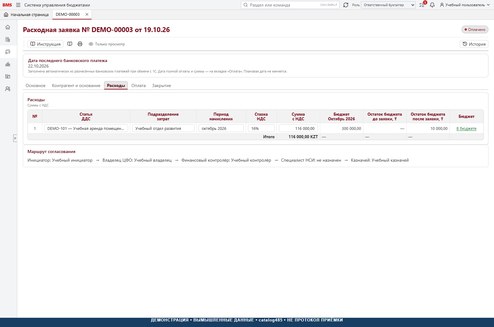
Оплата
Закрытие
Замещение
Что эти снимки не покрывают
Фактическую Windows-аутентификацию, SQL-транзакции, конкурентное резервирование, реальную смену статуса, работу антивируса, импорт из 1С, доставку почты и восстановление резервной копии. Для них требуется отдельная приёмка. Хеши PNG находятся в манифесте изображений.
BMS Community License 1.0
Copyright (c) 2026 Джабаев Бисемби
1. Область действия
Эта лицензия распространяется на код BMS, его сборки, документацию и другие материалы, которые правообладатель явно предоставляет на этих условиях, в пределах принадлежащих ему прав. Далее они называются «BMS».
«Модифицированная версия» — BMS с изменениями, в том числе переименованная версия или версия, включённая в другой программный продукт.
Это лицензия с доступным исходным кодом (source-available), а не разрешение на неограниченное коммерческое распространение.
2. Разрешённое использование
При соблюдении этой лицензии предоставляется безвозмездное неисключительное право:
- изучать, копировать и запускать BMS;
- использовать BMS для собственных внутренних задач физических лиц и организаций, включая внутреннюю деятельность коммерческих компаний;
- изменять BMS для этих целей;
- бесплатно распространять исходный код, сборки и модифицированные версии, включая публикацию бесплатных форков;
- привлекать подрядчиков для установки, настройки и доработки BMS от имени и в интересах пользователя.
Внутренняя работа компании с BMS не становится запрещённой только потому, что сама компания ведёт коммерческую деятельность.
3. Платная работа специалиста
Разрешается брать плату за фактически выполняемую установку, настройку и доработку BMS для клиента, использующего её для собственных внутренних задач.
Передача клиенту кода и сборок, необходимых для такой работы, допускается как часть её результата. BMS при этом остаётся доступной клиенту на условиях этой лицензии без отдельной платы за копию, лицензию или доступ к её функциональности. Авторство и лицензионные уведомления сохраняются.
Разрешение оплачивать работу специалиста не разрешает продажу самой BMS, её переименованной версии или доступа к ней как к сервису.
4. Запрещённое использование без отдельного письменного разрешения
Запрещается:
- продавать копии, сборки или лицензии BMS либо модифицированных версий;
- предоставлять BMS или её функциональность третьим лицам как платный размещённый сервис, SaaS, подписку или доступ за плату;
- включать BMS в платный продукт или пакет услуг таким образом, что плата фактически взимается за получение BMS либо доступ к её функциям;
- обходить эти ограничения переименованием, white-label-оформлением или иным способом отделения названия от функциональности.
Ограничения этого раздела не запрещают работу специалиста, прямо разрешённую разделом 3. Стоимость отдельной инфраструктуры сама по себе не является платой за BMS и не отменяет запрета платного сервиса.
Для использования за пределами предоставленных прав необходимо отдельное письменное разрешение правообладателя.
5. Бесплатное распространение и форки
При распространении BMS или модифицированной версии необходимо:
- Не взимать плату за саму BMS, её копию, сборку, лицензию или доступ, кроме оплаты работы, разрешённой разделом 3.
- Сохранять уведомление «Copyright (c) 2026 Джабаев Бисемби» и передавать получателю полный текст этой лицензии.
- Распространять относящиеся к BMS части на этих же условиях, не снимая ограничений продажи и платного сервиса.
- Явно обозначать модифицированную версию и факт внесения изменений.
- Не представлять свой форк как официальный выпуск правообладателя и не подразумевать его одобрение без согласия.
Автор изменений может указывать собственное авторство своих дополнений, но это не отменяет авторства и условий использования исходной BMS.
Эта лицензия не требует публиковать собственные внутренние изменения, если пользователь не распространяет их.
6. Сторонние компоненты
Сторонние библиотеки, платформы и иные независимо лицензированные компоненты регулируются собственными лицензиями. Настоящий документ не ограничивает права на такие компоненты и не предоставляет прав, которых нет у правообладателя BMS. См. THIRD_PARTY_NOTICES.md.
7. Гарантии и ответственность
BMS предоставляется «как есть», без гарантий пригодности для определённой цели, безошибочности, безопасности или соответствия требованиям пользователя, в пределах, допускаемых применимым законом.
В тех же пределах правообладатель не отвечает за убытки, возникшие из использования или невозможности использования BMS.
Пользователь отвечает за проверку своей установки, резервное копирование, защиту данных и соблюдение применимых к его деятельности требований.
8. Прочие права
Права предоставляются только при соблюдении условий этой лицензии. Права, прямо не предоставленные ею, сохраняются за их правообладателями.
Эта лицензия не предоставляет разрешения на использование чужих данных, учётных записей, ключей или инфраструктуры.
Политика безопасности BMS
Поддерживаемые версии
Поддержка безопасности распространяется на все опубликованные версии линейки 1.x, включая предыдущие выпуски. Она не ограничена только последней версией 1.x. Сообщения об уязвимостях этой линейки принимаются и рассматриваются для подготовки исправлений.
Сроки ответа и выпуска исправлений не гарантируются. Эта политика не является договором сопровождения или обещанием вознаграждения. Поддержка других линеек пока не определена; о найденной проблеме всё равно можно сообщить.
Как конфиденциально сообщить об уязвимости
- Email: bisembi@gmail.com.
- GitHub Private Vulnerability Reporting: Security → Advisories → Report a vulnerability в репозитории BMS, когда эта функция включена. Сам файл SECURITY.md не включает её автоматически. Если кнопки нет, используйте email.
Пожалуйста, не размещайте детали эксплуатации, секреты или реальные данные в публичном issue, обсуждении, pull request либо комментарии к коммиту. Сначала сообщите конфиденциально; дальнейшее раскрытие и описание исправления предлагается согласовать с сопровождающим.
Содержание сообщения
Укажите версию BMS, затронутый компонент, предпосылки и роль пользователя, минимальные шаги воспроизведения, ожидаемое и фактическое поведение, возможное влияние и безопасный пример с вымышленными данными. При наличии приложите обезличенный correlation ID или фрагмент журнала.
Не присылайте пароли, токены, закрытые ключи, дампы рабочих БД, персональные данные сотрудников или реальные финансовые документы. Если для подтверждения нужны чувствительные сведения, сначала обсудите безопасный способ обмена, не отправляя сами сведения.
Область продукта и границы доверия
Политика охватывает код frontend, backend, SQL-миграций и расширений, установщиков, операторских инструментов и интеграционных адаптеров BMS.
Основные защищаемые активы — бюджеты, заявки, резервы, факты оплат, управленческие начисления, закрытия, вложения, назначения прав и аудит.
BMS использует Windows/AD и отдельные роли приложения. Браузерный ввод, параметры HTTP, файлы и данные источников не считаются доверенными только потому, что поступают из корпоративной сети.
Доступ к каждой организации, ЦФО, документу и действию определяется серверными полномочиями. Техническая роль не должна автоматически заменять финансовую роль. Предполагаемые пользователем идентификаторы, подписи и выбранная роль не заменяют проверенную идентичность.
Обязательные свойства безопасности
При оценке изменений и сообщений необходимо проверять:
- реальную аутентификацию, серверную авторизацию и область доступа, включая прямые API-вызовы, отчёты, экспорт и вложения;
- защиту записывающих запросов от CSRF и подмены пользователя;
- допустимость переходов статусов, полномочия участников и независимость решений;
- непротиворечивость финансовых снимков, сумм и остатков;
- атомарность операций, контроль версий и отсутствие повторных финансовых эффектов при идемпотентном повторе или конкуренции;
- неизменность зарегистрированных решений и прослеживаемость исправлений, закрытий и действий заместителей;
- безопасные имена, размеры, хранение, проверку и выдачу вложений;
- минимальные права SQL и служебных процессов, защиту конфигурации, секретов, ключей, почтовых получателей и транспортных соединений;
- полноту и происхождение интеграционных снимков: недоступный или неоднозначный источник не должен превращаться в успешный нулевой факт.
Перечень задаёт требования к проверке. Он не утверждает, что новая установка уже прошла эти проверки.
Значимые сообщения и оценка влияния
Сообщайте о воспроизводимом обходе прав, утечке данных, несанкционированном изменении финансовых результатов, подмене решений, нарушении целостности резервов или оплат, опасной обработке файлов, выполнении чужого кода, раскрытии секретов и существенном нарушении доступности.
Серьёзность оценивается по реальной достижимости, необходимым полномочиям, затронутым данным и финансовым последствиям. Внутренняя сеть сама по себе не является основанием считать проблему несущественной.
Специальные исключения классов уязвимостей и принятые риски этой политикой не утверждаются. Известное ограничение, выключенный по умолчанию модуль или наличие теста не являются автоматическим основанием игнорировать проблему. Для зависимости важно описать её влияние на реально используемый путь BMS; сообщения о проблемах интеграционной границы также рассматриваются.
Безопасное исследование
Проводите проверки только на своей изолированной установке с вымышленными данными либо с отдельным разрешением владельца проверяемой системы. Публикация исходников и эта политика не разрешают тестировать чужие серверы, учётные системы, почту или данные.
Не проводите разрушительные проверки, извлечение чужих данных, подбор паролей или проверки отказа в обслуживании на чужой инфраструктуре. Обнаружив непредвиденный доступ, прекратите действия и сообщите минимальные сведения, достаточные для безопасного разбирательства.
Ограничения публичного кандидата
Исходный пакет не содержит рабочие БД, секреты, профили конкретной компании или полностью настроенный обмен. Для новой установки необходимы проверка Windows/AD, SQL-полномочий, HTTPS, реплики, вложений, SMTP, резервирования и восстановления.
Документационные скриншоты с вымышленными данными, успешная сборка и проверка манифеста не являются аудитом безопасности или сквозной приёмкой продукта.